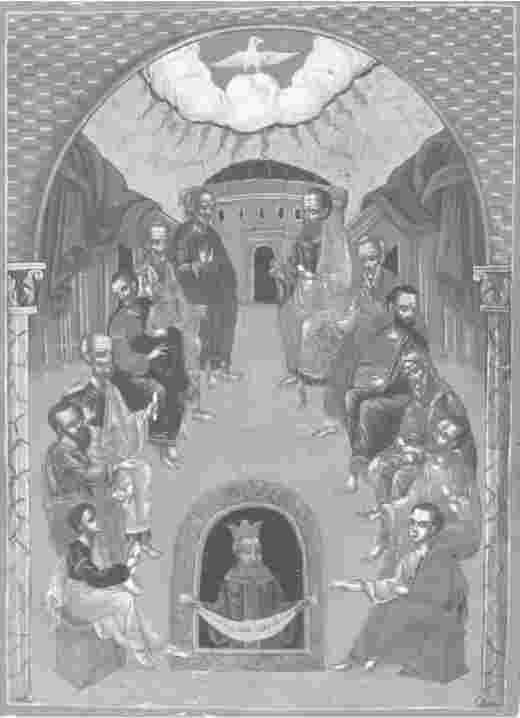
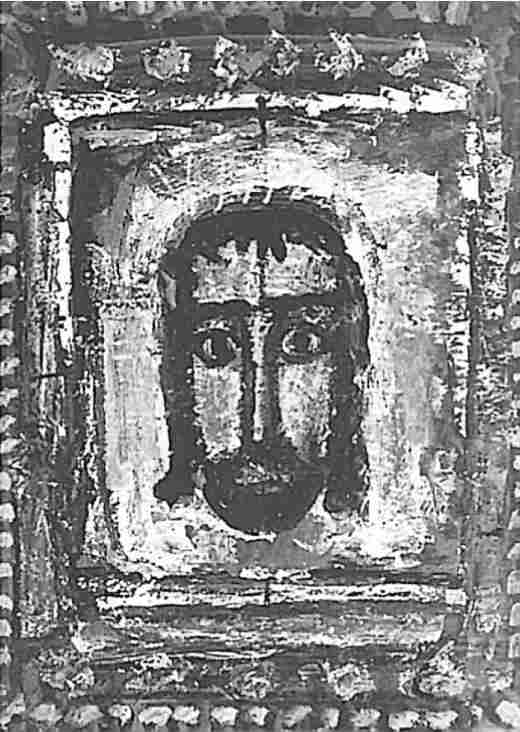
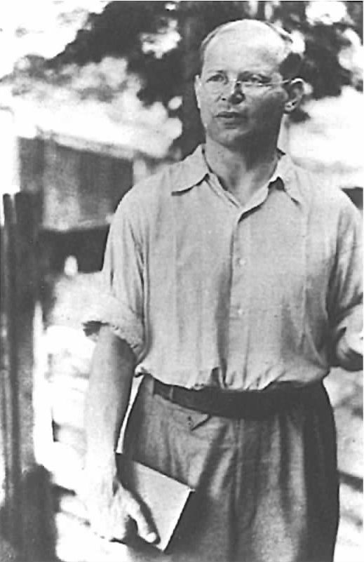
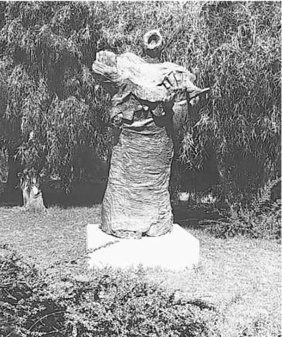
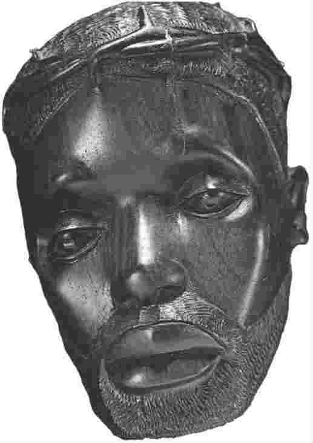
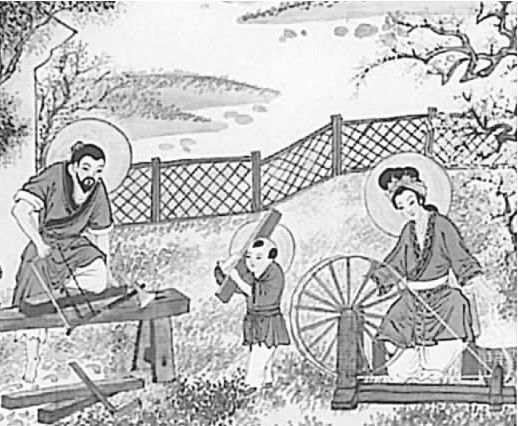
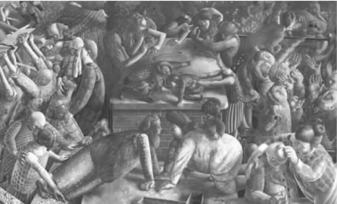
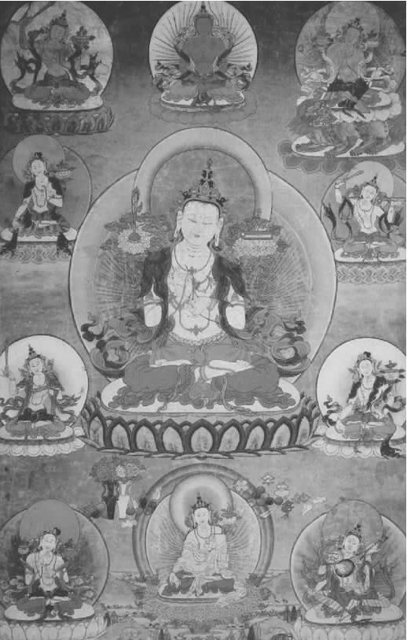

本章关注的正是这个基本问题。这一基本问题引导我们对上帝进行思考，意在就我们如何理解上帝以及我们自己，就一般的现实和人类理解，开显出关于上帝问题的一些巨大启示。
上帝是否实在这一问题包含两个至关重要的方面。第一个方面是：何为上帝？第二个方面是：何为实在？
使用词语就得知道它的含义，对“上帝”这个词来说也是如此。你自己把什么样的意思跟这个词联系在一起呢？这个问题值得一问。答案将在很大程度上取决于你的背景、所接受的教育、你的认同，这在西方文化中或许会有多种构成因素。即便并非信徒，你也很可能与犹太教徒、基督教徒、穆斯林、印度教徒以及佛教徒有所交往，对遍在（上帝无所不在）和全知（上帝无所不知）这类哲学概念略知一二。你会了解到，其他的许多教派都各有其不同的“神”，你还会见识到敬神者的行为，哪怕是通过媒体或者葬礼。你肯定也遇到过（或持有）这种信念：所有这些神都不可能是实在的，对不同信仰的最佳解释是，神是人创造的，是人类欲望、恐惧、幻想的投影。
如果当真对“上帝”是否实在这个问题进行一番彻查，情况会怎样呢？你会去检验哪位神呢？你不可能同时去检验所有的神，而且即便你努力想从所有神身上提取所谓“神性”这种精华，在“神性”究竟是什么这个问题上仍会众说纷纭。并且很明显的是，相较之下有些神更适合作为检验对象——很少有人会投入大量精力去探究一位古代印加神的实在性，把这样的神当做今天膜拜的最佳对象。信仰上帝的人往往是通过结识其他信徒产生那种信仰的。这是有道理的：首选的检验对象应该历经了千百年的讨论与选择，且被那些对我们来说很重要的人所重视。这自然是更为明智的，因为已然对我们产生影响的往往就是上帝这个概念——不管这影响是积极的、消极的，还是根本就不为我们所知。
当今，数十亿人都严肃对待世界各大宗教中“上帝”的主要人选。这些有关信仰和生命的宗教，通常对此问题已经有过千百年的理性讨论，既有他们自己在理解神性方面的拓展，也有与不同理解的论战。根据我在第一章导言里所说的，我将主要关注基督教徒所崇拜的上帝，但在本章末尾我会再次探讨不同的神这一问题。
在我们的文化当中，很多人对任何信仰传统都已经超然处之，“上帝”一词所唤起的图景实际上非常模糊。大众关于上帝的模糊看法或媒体对于上帝的见解，与某一宗教对上帝的核心理解之间往往存在差距。在某一群体中上帝的概念已被讨论并检验了千百年，他们所真正崇信的“上帝”被视为检验对象，这自然合情合理。因此我给神下了一个最宽泛、有效的定义，即“受崇拜者”。这就将问题直接引向了对某些群体崇拜行为的审视，以及对其有关神的概念之产生过程的探究。理性信仰者崇信上帝实际上都信些什么呢？神学的一项基本任务就是“思考上帝”，以求对此问题作出公正评判。这也正是我现在为基督教徒们所崇拜的上帝要做的事情。
主流基督教教义相信上帝是三位一体的。这个上帝与前面说到的模糊概念大不相同，如果有人说“我不信上帝”，通常他的意思并不是说他经过一番思量后最终不接受三位一体的概念。崇信三位一体的上帝本身就非常值得注意，需要对其产生的过程和意义进行基本的解释。我将以一个主流基督教徒的立足点对此予以说明，并指出与之相关的一些重大问题。
耶稣与第一批基督教信徒都是犹太人，因此要辨识他们所崇拜的上帝主要是靠研读犹太经文，即基督教徒们所说的《旧约》。其中有一则故事极为关键，说的是摩西在“燃烧的灌木”前，出自《出埃及记》第三章。这就是所谓的“圣灵显现”，也就是上帝示己于人，它是犹太教徒和基督教徒讨论上帝所引用的主要文本之一。在靠近何烈山 [1] 的沙漠中，摩西碰到了一丛燃烧的灌木，火焰熊熊，树木却安然无恙，一个声音对他说道：“我是你父亲的神，亚伯拉罕的神，以撒的神，也是雅各的神。”（《出埃及记》，3：6）这个声音继续说道：“我已经目睹了我的子民在埃及遭受的痛苦……我知道他们的苦难，因而降临来解救他们……。”（3：7——8）上帝让摩西去见法老并许诺会与他同在，而当摩西问到上帝的名字时，他得到的是这样的回答：“我就是我所是的。”（3：14）从这则故事当中会得到什么样的上帝概念呢？自然是众说纷纭，无休无止，但就当前的讨论，至关重要的有这么三点。
首先，上帝是通过崇拜他的关键人物得以辨识的，如亚伯拉罕、以撒和雅各：他们的故事是弄清上帝是谁的主要途径。其次，上帝是通过心怀怜悯与慈悲，救民于苦难而为人所知的，是站在正义一方的。最后，“我就是我所是的”这种神秘的名号至少说明，上帝可以按自己决定的方式自由成为上帝：没有“归化”可言，只有“永远超乎想象”，上帝在历史上可以不断地创造奇迹。
现在，让我们越过千百年的历史来看看耶稣（后面的第六章将对耶稣作更为详尽的探讨）。他正是处于崇拜上帝这个传统之中。但是，随着信徒们对耶稣的身份、耶稣的生死与复活逐渐达成一致，他们最终确信耶稣与这位上帝同一。该怎么理解这种非同寻常的结论呢？关键在于耶稣复活一节。这一点我们将在第六章作更为细致的研究，当下且让我们以早期基督教徒的立足点来对此问题进行审视。
对第一批基督教徒而言，耶稣复活堪称与上帝等量齐观的一个事件，影响了他们对耶稣、对历史、对自己，以及对上帝的理解。根据“燃烧的灌木”的故事，上帝现在明确地是“亚伯拉罕、以撒、雅各，以及耶稣的神”，而通过耶稣，上帝心怀悲悯地在历史上最黑暗的时期来到人间。耶稣复活就是那种伟大的奇迹。教徒们将之归功于上帝，认为耶稣的死而复生堪比创世。这一事件之要旨在于耶稣之位格，他由此依照上帝的旨意被视同上帝。耶稣被视为上帝的自我表现（或成了肉身的“道”），内在于上帝，信徒们从而开始将耶稣纳入崇拜对象。指向耶稣的说法、名号、行为方式林林总总，但总体是倾向于认为他有着无限的意义、无穷的活力和无尽的善，与上帝不可分割。不仅如此，他的生命也能以无限多的方式被分享。这在《新约》故事中有所表现：圣灵降临节上，耶稣将圣灵广撒人间；升天的耶稣把圣灵呼入信众。
因此，耶稣复活一事基本的神学结构或可归结为：上帝施行；耶稣以上帝行动的内容出现；人们通过自耶稣而来的圣灵得以转化。这可以被看成是后来三位一体教义的种子。造物主上帝说“我唯我所愿”；这个上帝明确的自我表达和自我奉献见诸耶稣以及圣灵。这与“燃烧的灌木”故事中的上帝并无二致，只是试图对一个巨大的奇迹作出公正评判。
然而，用了三百多年的时间，这些暗示才为人所知并在三位一体的教义中达成一致。这个过程本身就在很大程度上表明了基督教神学的本质。神学思考纷繁复杂的背景包括：把这种信仰传递给新成员（在口称“以圣父、圣子、圣灵之名”的洗礼中达到顶峰）、持续不断地崇拜这个上帝、确定《新约》的内容、阐述经文和传统、与最老成的当代哲学和文化展开斗争、应对来自异教徒和犹太教徒的挑战、处理基督教的内部纷争、在日常生活中坚守信仰。随着教会由受迫害的群体逐渐转而成为罗马帝国的一支重要力量，基督教关于教义的争论也从此蒙上了政治色彩。
这当中乱象丛生，波谲云诡。个中故事引人入胜，想要对基督教神学一探究竟则不可不知。对于基督教徒所理解的神学的本质，这个过程暗含以下几点：神学结论并非只是从权威声明中得出的推论，而是由那些崇拜者们得出，他们肩负责任，与上帝、彼此、经文、周遭的文化、日常生活，以及历史的风云变幻和兴衰沉浮相关联；《圣经》是与上帝和现实生活都密切相关的那种思维的范式；耶稣的生、死和复活表明了上帝脆弱地介入生活的程度，一方面允许人们去曲解、去误读、去作大恶，另一方面又绝不会就此罢休；在这位上帝面前人们究竟如何共处，这是一个没有尽头的学习过程，而神学思考对此至关重要。
关于当时的议题现在仍是激辩不已，但就我们目前的主题——“上帝”而言，直到今天，绝大多数基督教徒都一致认为若干世纪前的那些结论是正确的。上帝三位一体说已经成为基本的基督教智慧，而在20世纪，三位一体神学又经历了一次新的蓬勃发展。各界对此教义都有了全新思考，其中包括天主教教徒、新教教徒、东正教教徒、福音会教徒、五旬节教会教徒、女权主义者、后现代主义者、政教分离主义神学家、传教工作者、自然科学家、心理学家、社会理论家、音乐家、诗人、哲学家、非洲人、亚洲人、澳大利亚人、世界各宗教的神学家，不一而足！
那么，关于基督教上帝的意义，能从中得出哪些神学教益呢？种种教益可由一种形式笼而统之，即“崇拜的智慧”。
首先，存在着一个否定的准则：永远不要想象上帝，如果你没有考虑到三位一体的方方面面——上帝是造物主并超越他所创造的一切；是否涉足种种历史乱象，全由上帝自己决定；在圣灵中上帝自我奉献，自我分享。规则是：与上帝发生关联时，切不可忽视以上某个甚或几个方面。
其次是一条肯定的准则：上帝就是爱，上帝的存在本身就涵盖了一种关系——三位一体是对圣父、圣子、圣灵的动态关联。上帝之一体乃大爱的生命，丰富复杂，泽被万物。
再次就是，要随时准备着迎接来自这位上帝的更多奇迹。总是需要不断地认识，而20世纪的神学研究可以看做是将“三位一体的革命”推进了一步——比如，探究现代自然科学和爱因斯坦时空理论对上帝的意义，或者询问何以将耶稣之死在某种意义上视做上帝之死，或者着眼于五旬节教会运动来为圣灵正名。
最后就是，对于基督教徒而言，在理解上帝如何与其他人所认定的神相联系时，很可能会有更多的意外发现：三位一体说业已成为基督教徒与其他宗教信仰者之间最富有成果的思想交锋的核心。崇拜者们意见各异地辨识各自的崇拜对象时，究竟是怎样一幅景象？人绝不会有一览全貌的可能。但是，三位一体说的许多教义给了基督教徒足够的余地来尊重他人的信仰，并在许多事关其他信仰与上帝的关系的问题上保持不可知的态度。
我们业已探究了基督教徒所崇拜的上帝的意义。在每个关节上，更为深入的神学议题都可能产生，而读者或许已经发现问题在不断涌现。在神学研究当中，几乎每一个关于重大议题的命题都必然充满争议，上帝正是这其中最大的议题。我希望到目前这个阶段，至少三件事是清楚明白的：切不可想当然地认为自己知晓“上帝”一词的意义；深入研究某些宗教，以期为理想的神学思考赋予必要的丰富而具体的意义，这是有价值的；基督教三位一体上帝的意义的确有某种合理性——即便是它对其他思想体系和世界观形成了挑战，引发的疑问之多远非自己所能回答。
但三位一体说是否就是对的呢？神学如何着手回答这一问题，正是本章余下部分的主题。
我们如何确定某物是实在的？开口作答之际我们就意识到，这一定程度上有赖于我们所说的“某物”的性质。
如果问的是我当下就身处其中进行写作的房间中的一张桌子，那么我可以环顾四周，看得见那张桌子，也摸得到它。但是，如果我想知道三百年前某一天在某个房间是否有某张桌子，这可怎么办呢？任何尚在人世的人都无法查看那个房间，那个房间和那张桌子可能很久以前就都已毁坏了。那么，在那张桌子旁围坐交谈时的话语又当如何呢？在这些关乎史实的问题上或许还能收集一些佐证（或是考古所得，或是有案可稽），但是对于时人所提供的记述，很可能我们到头来无非还是信与不信两种态度。对于诸如谈话以及大多数需要借助渊博的知识和深入的思考来重现历史的其他事物，尤其如此。
其他的“事物”提出了不同的问题。你该如何去确立他人的思想、情感、梦境或意图的实在性呢？或者就你自己的吧，该如何确立呢？历史记录、小说或者诗歌的“实在意义”，情形又如何呢？价值观念、善、恶、谎言的实在性有什么意义呢？英语语言，“存在”于古往的、当下的、不同人群中、书面文本中、影片中、交谈时、对话时等等，它们有什么样的实在性呢？法律体系、即兴创作的音乐、科学理论、一光年，或者一个微笑，它们的实在性又怎样呢？
在所有这些各种各样的“实在性”中有一点必定是明确的，即判断某物实在与否并无单一标准。标准有误，巨大的混乱必将接踵而来。你正在阅读的这一页纸或许可以从物理和化学的角度加以分析——其纸其墨。但这种分析会全然无视文字意义的实在性——要分析这种意义，就需要懂得书写所用的语言，还要有特定的教育背景。
那么，上帝的实在性究竟如何？许多讨论（持不屑态度者尤甚）看起来正像是以物理和化学的方法来看待本页内容的意义。将预先确定的“实在性”的标准加诸有关“上帝”的某些定见，结论当然是这样的存在无法开显。
然而，这样地一笔带过，还是遗留了一个问题，即为何那么多的人都对上帝的实在性确信无疑，但解释起来却五花八门。近几个世纪以来，对名之曰上帝的现象作出的解释层出不穷。最常见的提法（可追溯到古希腊人）是，上帝是人类想象的投射，实现了一系列的功能。这种解释的问题在于，人们的想象有真有假，或者亦真亦假。不过，如果这种种“想象”能由某个学科独立或某几个学科合力尽可能详尽地作出解释，则这种提法也能增加说服力。在人类认识与解释的每个重要领域都有实践者——哲学家、历史学家、心理学家、精神分析学家、社会学家、经济学家、进化论生物学家、遗传学家、精神病学家、信息理论家等等——提出有关“上帝”的还原论表述。另一方面，相同领域的不同实践者则宣称，种种解释虽各有其合理之处，但都不够充分、透彻，并且，在确认上帝的实在性时，对上述种种学科也予以考虑，这种做法从思想上来说是合理的。
种种争辩无不引人入胜，都需要神学一一应对。有两点值得特别关注：使用或假定“上帝”的定义；使用或假定实在性的标准。本章是就这两点达成一致的开端，但也只是对种种争辩的一个简介，这些争辩顺理成章地引导人们涉足诸多学科，也必须应付各种纷繁复杂的问题。我已经讨论了三位一体上帝的概念；现在是对适于检验这位神的实在性的标准加以审视的时候了。
倘若讨论的上帝正是基督教信仰及其神学中的三位一体上帝，情况该当如何？确定这位上帝的实在性都需要些什么？
首先需要有这样的认识：上帝是一切存在者的造物主。个中意味或可详加讨论，但于此只消设想上帝并非“处于”实在性中的某个客体，而是一切实在的源头和维系者，与一切实在有着密切的联系。用神学的话来说，上帝既是超验的（一切实在都有赖于上帝且“从无”而生），也寓于万物之中（上帝呈现于且存在于一切实在之中）。因此，上帝自身之实在不同于其他被造的实在；在就此基本区别进行表述方面，神学家们提出了许多想法。这些想法包括试图就某一方面对上帝的唯一性进行表述，如自我存在（唯一一个存在之源在乎己身的实在）、自由、爱、善、永恒、力量、呈现、美、荣耀、简单、自我交流、生发万物等等。
以语言表述上帝的唯一性而直指问题核心的一大进步，要数坎特伯雷大主教圣安塞姆关于上帝的描述：“至大无俦，超乎想象”——经由圣波拿文都拉的发挥，这种描述继而被补足为“至大至善，超乎想象”。进一步讲，无限伟大者非我辈有限之脑力所能理解。这位神永远超乎人类的理性能力，如果你自以为在某个定义中最终理解了上帝，那么请放心，你所理解的绝非这位上帝。上帝“永远更为伟大”，这对任何证明上帝存在的尝试都有着直接影响：没有什么体系可以大到能从中评价上帝的实在性。探求上帝的人不会有任何所谓中立的标准，对证据也无法一览全貌。上帝就是终极体系，只有上帝能窥见全貌。
那么，探求者该当何为？答案是，依照这个上帝的身份去努力探求上帝。探求一位业已发现了你的上帝意味着什么；你的探问由谁激起；正如奥古斯丁所言，谁比你更亲近你自己呢；谁企望被你发现；谁通过自然、历史、经卷以及你自己的经历中各种各样的符号来传达丰富的信息呢？找到这位上帝的秘密就在于开始相信这位上帝正是那样的上帝。正所谓信以启悟。这与人类关系的相似之处显而易见：任何真正有价值的理解与爱都需要信任，而在你自己和他人身上究竟会有何发现，关于这一点你不会得到什么预先保证。
但是，欲臻此信，所由何径？成规定法，于此殊乏。基督教及其他宗教各有其千差万别的入信之法。这通常都是通过你所信任的人来达成的，你相信他们的信仰听起来是正确的。进入信仰也可能是通过一本书、一次日落、某次特殊的经历、一首诗、一段音乐、一种苦难、一次善行、一次恶行，或是任何别的什么机缘。一般说来，这是许多因素慢慢积累、共同发力造成的结果，往往都是潜移默化的。不过，一种可能性是：质疑、探求意义、理性探索或许也会是唤醒信仰、促成决定的机缘。尽可能孜孜不倦地探求可以想见的最伟大的真理，自然不枉一试。
有关上帝存在及其本质的哲学和神学争辩正是由此切入。这些争辩充其量只是不再妄称：证明上帝的存在可以与证明一张桌子、一个历史事实通用一法。它们试图表明上帝的观念具备（或不具备）理性意义，能够（或不能够）与其他类型的认识相联系。在基督教徒之间、对上帝和真理有着不同认识的人之间，重大的争辩久已有之。上述所有学科也都卷入了这些争辩，而学科实践者对于上帝实在性的问题，质疑者有之，拥护者亦有之。在此过程中，对基督教造物主上帝的信仰不断受到挑战，重新被思考、被想象，得到了扩充，也变得更加丰富。不过，本章的经验是，只有对两个假定——上帝是如何被定义的；调查上帝的实在性时如何将上帝的本质考虑在内——保持警醒，方能紧扣主题，避免不知所云。
造物主上帝的一个维度是特定历史时期上帝对人与事的干预，这一点上节略去未谈。基督教有关上帝的观念是以各种独特的方式自由表述上帝的身份，包括一位关键人物和一段关键历史，它揭示了一整套有关上帝实在性的进一步标准。显而易见，必定有那么一套适用于历史事件和人物的标准。如果耶稣基督就是上帝之子这个故事被视为能够揭示上帝的身份，那么有关耶稣的证据就必须真实可靠。
究竟何为“真实可靠”，这个问题甫一提出就一直争议不断。主流观点从来就不认为《圣经》记录的所有细节都应确切无误——若不然，记述出入颇大、甚至有些地方自相矛盾的《新约》怎么也不会被奉为圭臬。相反，重点是要相信，那些故事提供了足以采信的证据让人知道耶稣，知道他的所作所为和所受的苦难，并让人与耶稣产生关联。
就耶稣的实在性这一点而言，对证据的依赖至关重要。耶稣的历史无法重演——接近这段历史的唯一途径就是通过各种各样的证据。经过反复核实，人们对证据或信或不信，或者不全然相信。基督教信仰认为某些证据基本上是可信的。要是证据不同，对上帝的理解也就随之不同。因此，基督教经卷及其传统在某些方面，一如其核心人物那样易受伤害，这个核心人物被误解、被控制、被折磨，最终被杀害。基督教一直以来常常禁不住想要声称或争取一些更可靠、可确定、不那么容易招来疑惑和质疑的东西。不过，一直以来都有一个根深蒂固的传统，即坚称适用于这位上帝的可靠性的形式就是相信他人的言辞。这必定要招来异议，而基督教神学可采纳的唯一合理之道就是直面这种反复核实的需要，通过辨明事实来维护证据中的主要信息。
圣灵的实在性又是如何？传统观点是，割裂开来看，圣灵不得而知。圣灵以他／她／它的效验为人所知（关于在言辞上谈论圣灵的性别，颇有些引人入胜的问题），如信、爱、希望，又如在预言、教导、祛病等天赋之中。更为广泛的是，“圣灵之为”见诸整个天地万物，当天地万物堕落毁灭之际，圣灵可以重生，可以变化。圣灵与震撼人心的经历，如改变信仰、神灵感应等联系在一起；与世世代代追求智慧、建立群体的缓慢而悠长的过程联系在一起；与洗礼、授圣职礼等群体习俗联系在一起；与祈祷礼拜、斋戒和乐善好施等习惯联系在一起。
显然，要知晓这样的实在确乎方式多多，但均非直接方式，因为人们绝无可能直截了当地撞见圣灵。
这少不了一个复杂的学习过程，与任何有价值的学习一样，它要求信任、自律和长期的自我介入（通过头脑、想象力、感觉以及意志），直到以各种方式被转化。同时，根本拒绝踏上此途者有之，半途而返者有之，因疑而废者亦有之。但是，不专注于这个过程，就没有机会认识到实在性。任何中立的、置身事外的，以为可以“客观”看待圣灵之实在性的考察都被排除在外。

图1 一副刻画五旬节的俄罗斯圣像画——圣灵降临
上一段应该已经明确了比较“上帝”人选的巨大困难。其中所描述的“通过自我介入来理解”，在其他信仰中也有相类之法。进退两难之境不言自明：置身印证上帝的任何传统之外，则对一切传统的认识有失之浅薄之虞；置身某一传统，又会排除多方对比理解的可能。
这是因为，每一个主要的信仰传统都是彻底的、终身的信奉。那是整个的生活方式，并不仅仅局限于信念或者对真理的体认。一个虔诚的、终生奉行犹太教习俗的人，不可能去虔诚地奉行伊斯兰教习俗或者新时代的“混搭”习俗。
不过，跨越不同宗教和世界观之间的界限，通过学习、合作、善意、友谊，孜孜不倦，渐臻“双语”甚或“多语”之境也不无可能。神学和对宗教的相关研究是实现这一步的重要组成部分。在应对上帝或者神这样的问题时，神学试图明智地弄清对于数十亿人而言，最有意义的实在究竟是什么。在神学的全盛时期，它认识到对塑造生命的真理、美和实践等重大问题不可能中立地对待，对这些问题谁也不可能像上帝那样一瞰全貌。得不出有关上帝实在性的结论性、论证性的证明，这对神学并不构成障碍——还有其他许多有价值的思想上的目标。坦言自己来自何方，而后耐心学习，就重大问题与他人（不管其信仰同于己或异乎己）进行交流、讨论——最丰富多彩的神学方面的思想交锋正是在这些人中间产生的。这种做法往往会带来眼界的转变、超乎想象的惊奇，尤其是在思考上帝的方式方面，同时，不可分割地，也包括对自己、他人以及天地万物的思考。
生而为人究竟意味着什么？本章将介绍对这一问题的神学思考。崇拜这种现象可以被视做人类生存的核心动力，本章以此开篇，随之进入对崇拜问题的神学讨论，又继之以对上帝和崇拜何以与伦理相关联的思考。最后，将理解人类的若干启示汇集于章末。
定义崇拜以观察身处崇拜中的人与社群，这是可能的。保罗·蒂利希有言曰“终极关怀”，意在使崇拜潜在地普适于芸芸众生。埃米尔·涂尔干说到过“促使社会有序运行的冲动”，这些冲动可被视做终极关怀的一种社会形式，它整体支配着一个个群体中的人。崇拜可被定义为个体或群体满足其终极关怀的行为。被一种强大的整合性、强制性的关怀或欲望所支配，这就像是一神论——对一个神的崇拜。让自己的终极关怀散布各处，则像是多神论——对多个神的崇拜。
以上述关切、冲动和义务来描述自我及自我所在的群体，这并不困难。生活中每个重要领域都有那么一个方面，你并不是出于个人选择才经历这个方面（尽管在与其发生关联时你或许有不少选择可作），但它却决定了你的行为。
想想金钱以及经济价值和经济活动的整个领域吧。这些都无计可避，且都具备主导个人、群体乃至整个国家及全球网络的能力。大量的精力和才智都不同形式地集中在为经济服务上了。如果这种情形在你生命中的重要性超过了其他的一切，那么，从崇拜形式的广义上讲，正如那句谚语所说，这就是“你的宗教”。或者，以我在第一章用到的词来形容，这就是一种“洪流”，一种挟裹了你整个生命的终极实在。
针对生活的其他基本方面，或许也可以提出相似的看法。你可能会被对自己的家人、自己的种族、自己的性别或者自己的国家的献身精神和责任感所支配，这种责任感和献身精神变得具有终极性。或者，你也可能想要在各种法律体系、社会以及国际社会当中伸张正义，被这种需要所支配。又或者，你最大的欲望可能就是享乐和自我实现，以至于为之心醉神迷，无法自拔。
如果，就像上一章所说的那样，受崇拜者即神明，那么崇拜的这种宽泛概念便指向了一个多神的世界，也即许多终极关切和欲望的对象，但在一般意义上，绝不可能所有那些对象都是“宗教性的”。这样一来，各种宗教便可被看成是崇拜的各种传统，其任务，正如尼古拉斯·拉施所言，在于迫使人们戒除那些主宰、虚耗和扭曲他们生活的、不够格的终极关切、神或偶像，通过与这些传统的成员、机构、实践和信念的紧密结合来重新定位并激发他们的欲望。
崇拜这一有趣的现象看来形式多样，既可以是宗教性质的，也可以是非宗教性质的。它不但与希腊宗教、万物有灵论、基督教以及伊斯兰教，也与法西斯主义、资本主义和“戴安娜”现象有关联。但是，就这样泛泛地看待崇拜实际上困难重重。主要问题是，这会给人们留下一种印象，即通过某种所谓终极关切或欲望的普世的、不变的特征，人类就可以被理解。想要俯瞰人神关系，一览全貌，上一章针对这种企图已经作出了批评。作为发轫之举，这种尝试也算有益，但是，神学思考越是深入，就越是需要认识到所涉及到的“神”的性质至关重要。没有准备好就神的某个特定概念进行思考的神学，只能使自己陷入一种不堪境地，即罗列和描述种种选择对象而永不触及真理和实践的各项议题。知晓种种重要的选择对象确乎重要，但每个选择对象都自有其整套的意义的世界，蕴藏在世世代代的崇拜、争论和日常生活之中。不同选择间的对话固然必要，但正如上章所言，本书这样的简短导论优先考虑的只能是深入地至少就其中之一进行讨论。因此，基于以上对三位一体上帝的讨论，且让我们就对那位神的崇拜现象作一番神学思考吧。
探索崇拜现象可以一探神学矿藏至富之处。正如上章描述的那样，三位一体说本身是在千百年的崇拜过程中由思考得来的。千百年的历程表明崇拜如何涵盖了现实的基本方面，而这诸多方面引发了深刻的问题，也不可避免地带来了连连争议。
祈祷的五种基本形式的神学意涵便可聊作一例。
赞美上帝是一种动态的关系，头脑、想象力、情感和身体都要专注。赞美上帝时，思维不断地接受挑战，超越自我，以求公正地评判上帝，上帝永远超乎我们的认识。当崇拜者努力拓展思维，变得更有能力认识上帝时，这堪称是对崇拜者思想创造力的一种约请。出色的赞美总是试图从语言、音乐、姿态及其他表达方式中，提炼出某种对《圣经》、传统、其他崇拜者，以及对当时的场合都很敏感的东西。在最好的情形下，这包含了殚精竭虑的思考。当然，这绝不意味着它就不得不成为学术神学——大多数并非如此。但学术神学如果想要有什么深度，就必须应对此处提出的问题。
假如上帝因其所谓的“属性”或“至善”而被赞美，那么下面这些赞词各自又有何意义——善、慈爱、正义、自由、独立存在、永恒、无所不能、无处不在、悲悯、有耐心？我们是否只是基于对人的认识，来拓展我们关于这些赞词的可能意义的观念？或者，这些属性是不是以一种非常不同的方式适用于上帝？若真如此，它们如何具有合理性？我们创造出来的投影难道没有可能只是虚幻？上帝的三位一体为其种种属性增添了怎样的独特内容？神学书籍充满了关于这类问题的讨论。
对上帝的感恩是人们与其所赞颂的上帝之间的动态关系的又一个方面。假如我们整个的存在都有赖于上帝，且上帝又赐我们以真、善、美，那么以感恩作为回应自是可想而知。一个基本方面就是对上帝所行之事表示感激。但是，应该如何构想上帝的行为呢？上帝的行为是否能从其他事件及行为中分离出来，还是必须通过其他事件和行为才能窥见上帝在作为？人们如何认识到上帝在作为？对于基督教徒而言，如果上帝的活动范式是耶稣基督的生、死、复活，那么，他们今天该如何运用这一标准呢？
与第三种形式相关的上帝活动的关键方面又出现了，也就是为他人祈祷，又称代人祈祷。传统上，这被看成是通过圣灵协同耶稣基督的一种形式。在基督身上，上帝与整个世界汇合，他人的需要和苦难一时都寓于祈祷当中。代人祈祷就是在上帝面前与他人等同并代替他人向上帝发出请求。这对理解上帝及其发挥作用的方式有何暗示？应该把它看成是对上帝的神奇操纵或者看成是在改变上帝的主意吗？
同样的问题也见于对第四种祈祷模式的思考当中，也即为自己或者自己的群体请愿。《圣经》中对信徒有非常直接的鼓励，甚至命令，让他们向上帝请愿，并许诺有求必应。但是没有得到回应的祈祷呢？难道上帝会区别对待，对那些祈祷者偏爱有加？我们能否想象上帝竟会对普罗大众个体生活的所有细节都加以关切？
最后就是告解，也即向上帝承认自己犯了错并祈求原谅的一种祈祷。在化身耶稣基督的上帝的光耀下直面自我，既让人认识到自己是如何地不完美，也让人意识到自己身在神前，这位神明代表了对罪恶无所不包的宽恕。但罪又是什么？耶稣之死的意义呢？被宽恕和宽恕他人是如何关联的？以后几章将探索这些问题，但眼下值得提出的是崇拜本身误入歧途的问题。
“败坏至善便是至恶”，一旦崇拜的动力被扭曲或误导，其影响就可能是灾难性的。当人们以只适于对待上帝的方式与某种处于上帝之下的事物相关联时，这种情况在其最露骨时就叫做“偶像崇拜”。个人或整个群体的所有天赋、精力、热情都被鼓动起来服务于某个并非上帝的事物，生命的整个“生态”被扭曲，被污染。一些常见的偶像包括：国家权力与荣耀、金钱与财富、地位与名誉、意识形态与各式的理想、享乐与自我实现、舒适与安全感、各种英雄人物。然而，崇拜的扭曲也并非总是那么露骨。所有真正的崇拜形式还是能保持下来，虽然也有某种堕落——或者是排除异己，或者是政治忠诚的腐化，或者是对需求置之不理，或者是道德沦丧，教义变质。神学的角色至关重要，它检验崇拜中所包含的一切，包括传经与布道。
对于某些特定文化当中崇拜所面临的重重困难，神学也会加以诊断，进行回应。在当今的西方文化当中，在第一章所描述的种种洪流之间，崇拜往往不得不勉力以保全自己的完整性、活力和意义。一种常见的应对之策是，让崇拜者们把心思全放在自己及其群体身上，将注意力集中于崇拜的方式（如礼拜的形式、牧师的领导、特色鲜明的教义或宗教体验），以降低人从三位一体的上帝身上分享爱、智慧与美的动力，也淡化在世间对它们的分享。神学在此试图唤醒崇拜者的记忆，让他们能够完全认识到其崇拜的源头、特征和方向。这是完全意义上的告解，是着眼于上帝的关联对个人及其群体的整个生活进行评估。就思想性而言，它要求严格，而争议也在所难免，并且，它会引发与其他人之间的深入讨论，这些人的“崇拜”——如上所述的广义“崇拜”，会引导他们作出评估，这种评估与着眼于三位一体上帝所作的评估或一致或不一致。
祈祷的五种形式——赞美、感恩、代祈、请愿和告解——只是神学崇拜及其所提问题的入门路径之一，这些问题关乎上帝、崇拜者、他人，以及世界万物之间的相互关联。其中一个关键的、反复提到的问题是如何理解上帝的活动，下一节将以人类活动为参照来讨论这个话题。
伦理思想或道德思想关注的是人们行为举止应当怎样或者可能怎样的问题。理解道德的方式多种多样。最为普遍的几个核心观念有：依从自己的良知；尽你的义务；培养一定的美德和习惯；让行为与某些价值、标准，或者某种关于善的观念相联系；坚守某些原则；接受某种特定传统的准则；见贤思齐；追随你最深层次的欲望；凡事考虑后果，作出理性选择。上述每一条都会提出许多问题，其中有些是以伦理理论的形式得以解答的，这些伦理理论的提出者包括柏拉图学派、亚里士多德学派、斯多葛学派、托马斯学派、康德学派、实用主义学派、存在主义学派和进化论学派等西方思想流派。
神学伦理就是郑重其事对待上帝的伦理。诸如上段提及的核心观念和思想流派或许也发挥着重要作用，但神学伦理的突出特征是上帝自始至终都至关重要。对神学伦理的理解，不管是出自宗教群体的内部还是外部，在当今世界都非常重要。所有宗教传统都会涉及到伦理，而许多关于个人、家庭、政治、教育、经济、医疗和其他事项的问题，都取决于是否可以就什么正确什么错误、什么更好什么更坏形成一致看法。争议各方需要具备辨别他人如何看待这些议题的能力。在当前形势下，事实往往是宗教立场尤其容易被歪曲——信众误传的几率往往并不亚于非信众。他们有时候会完全被视为权威——似乎一切信徒的道德都巨细无遗地由神的天命所口授；或者上帝可能被视为对道德毫无影响。
至关重要的问题又来了：哪位上帝？上帝创造了有良知和道德推理能力的人类，然后就对他们弃之不理了吗？上帝是否定下了圣诫或其他准则，并以是否信守那些圣诫或准则来对人进行裁决？上帝涉足人类生活的目的是否就在于引人向善？每种观点所想象的上帝都不相同。我将探究视上帝为三位一体的基督教神学伦理，以已经建立的体系为基础。关键问题是：上帝创造万物、维系万物，深深地涉足所有人类历史，尤其体现在耶稣基督身上，并且通过圣灵以多种方式呈现给天地万物——在这样的上帝面前生活有着怎样的道德启示？我将在欲望和责任这两个标题下对此问题进行探讨。
本章在开篇之初就终极关切、根本义务乃至冲动对崇拜进行宽泛定义时提到过欲望。我们最强烈的欲望令人欲罢不能，使人深受支配，它们不是全由自己作出的选择。难以抗拒的欲望几乎可以产生于生活中的任何一个领域。在人际关系中，欲望最为常见，但在饮食、喝酒、毒品、工作、金钱、权力、地位、美貌等方面欲望也同样存在。我们的经济和文化已经日益变得醉心于激起人们对商品、娱乐以及任何营利性事物的欲望。在生活的各个领域，欲望都是行为的基础，故而也是道德的基础。欲望的塑造和引导占据了人类生存的核心位置。
欲望、道德以及生活的每个重要领域相互交织，因此，道德与生活的其他领域，与我们的思维习惯、情感习惯和身体习惯无从分离。几大宗教都已承认了这一点。它们都关注对欲望的训练，方式多种多样。崇拜已经成为一个核心方式，其中习惯性的欲望被导向了所认为的最具满足感、最有价值的目标——上帝。包括教育、社会制度、习俗、规则、文化交流在内的一整套体系共同作用，维系着以崇拜为核心的欲望行为。在这套体系当中，绝不能认为伦理仅仅关注成问题的决定和选择：它所关注的是善的欲望的基本形成过程和维系过程，因此关注的也就是神性的事情。那么三位一体上帝和欲望是什么关系呢？
基督教神学关于欲望最重要的命题就是人为上帝之所欲。其实质就是相信，他们势不可当地被爱着他们的那个上帝所需要。上帝创造了他们，护佑他们，对他们讲话，选择他们，召唤他们，宽恕他们，教导他们，给他们以圣子圣灵。换言之，人们的任何活动在根源上都是被动的。这种被动性如何与人类活动相关联？这一点也许是基督教伦理最基本的问题（其他多数宗教传统都有自己的基本问题）。就当前的讨论而言，我们该如何从神学的角度去理解以下两方面的关系——一方面是被上帝需要，另一方面是对上帝的需要和上帝所需要的。

图2 乔治·鲁奥绘制的《圣像》（1933）
这一问题可以归入数个神学标题之下——这种关系位于神的自由与人的自由之间，慈悲与本性之间，称义与成圣之间，信仰与善行之间，圣灵与人类能力之间，上帝的主动和人类的回应之间。由于人的尊严、自由、能力、创造力和自治权等倍受重视，这已成为近几百年来西方思想界一个尤其尖锐的问题。麻烦在于，神的自由与人类的真正自由似乎是一种相争的态势。假如上帝掌控着主动权，我们怎么能够自由？要想成为完全成熟的人，我们是否必定要掌握主动权，不受制于他人的意志和欲望？上帝是对人类自由的一种侵犯，这是许多无神论思想中根深蒂固的观念。为了成为完全意义上的人，摆脱对上帝孩童般的依赖，像成人那样掌管自己的事务，难道我们不该做个无神论者吗？
神学方面对此问题的反应各不相同。有些已经接受了人与神的自由在一定程度上相争这一设想，从而试图为二者界定各自的范围。一种说法是，上帝创造了世界，然后赋予它完全的自治权，不存在神的“干预”。其他说法允许某种形式的神的活动——鼓励、交流、劝说，但不能越界侵犯人的自由和主动权。不过，主流的反应——代表人物第二章已经有所提及，如巴特和拉纳——一直以来认定人神自由并不相争。这能想得通吗？
基本做法就是拿人与人之间的爱作类比。倘若你爱我，你尽可用自己的自由来保全甚至加大我的自由。你采取主动所做的事或许完全都是为了我好，为了我的尊严。更深刻地讲，究其根本，可能自由并不是作为个体的我所“拥有”的东西——或许它只会在相互关系中，尤其是在爱的关系中完全绽放。因此，没有你主动的敬与爱，我就无法成为一个完全自由的人。只有在对他人作出回应时我才是自由的。当然，人群之中有各种各样对自由的歪曲——人们在使用它时或者是想左右局势，或者是想胁迫他人，或者是为了一己之私，或者是心存不轨，或者是愚昧无知。但是，当一个人心存上帝时，他所想象的自由就是一种能够创造并维系其他一切自由的自由，绝不会歪曲它，而是会主动去强化它。如果人们能以某些方式互相强化对方的自由，为什么神就不能做得更好呢？
然而，把上帝与他人相提并论是有问题的，人类“更好的”推断也可能无法给那种根本区别，或者说上帝的超然性，以公正评判。人们之间的互动有助于想象相互关系中存在非胁迫、非竞争自由的可能性；不过，上帝的自由是否并不那么势不可当、那么与众不同、神秘兮兮，以至于不该把它与人类的自由相提并论进行思考？
对此，神学的一个方法是去探索泾渭分明但却彼此关联的自由：自有的自由和创造的自由，第一位的自由和第二位的自由，自主的自由和依赖性的自由。这样一来，谈论依赖性自由或第二位的自由就没什么矛盾了——这只不过是以另一种方式在说：人类是被创造出来的，不具备神性。我们的自由以至其他的一切皆拜上帝所赐，完全自主的欲望就是想要成为上帝的欲望，这样的欲望是错误的。我们真正的自由在于能应对上帝的主动性——这给了我们巨大的活动余地，但也仅限于与上帝的关系这一方面；拜上帝所赐我们获得了自由，对此我们可以尽情表达感激之情。当我们回应上帝对我们的欲望，当我们使自己的欲望，即爱上帝、爱他人、爱天地万物的欲望，与上帝的欲望协调一致时，我们的欲望就会引导我们走向最圆满的荣耀。因此，上帝的独特性和主动性同时也被认定为人类彻底的荣耀。
但是，神学方面的深度目前并未完全探明。越是探究基督教神学，探究无神论者和其他人对它的批判，就越是会清楚地发现争论的根本既事关上帝的本质，也事关人类的本质。对很多人来说，基督教神学令人不快之处在于，它并不认为人性与上帝是不相容的，也不认为人性与上帝之间存在实质性的紧张局面。相反，由于相信上帝自由地通过耶稣化身为人，基督教神学不仅拒绝看到一种必要的紧张局面，甚而至于发现了神性与人性光芒四射的融合。对上帝的定义（许多定义都是如此）没有排除这种与人性的统合。这样一来，不但上帝的概念受到了影响——自然也涉及三位一体教义——人的概念也受到了影响。人并未因此而等同于神，但是通过与耶稣基督的关系，人被引入了与上帝有区别的统一。第六章将进一步对此进行讨论，它在不同方面都给人以启发，但就目前而言，要紧的是要注意到，基督教神学中关于如何理解人与神的自由的基本线索，是通过对耶稣基督的思考得出的。
《马太福音》、《马可福音》、《路加福音》中对耶稣生平和传教的记述一开始所道出的故事，揭示了被欲求和欲求作为基督教伦理观及上帝面前人类生活形态的根基所可能具有的意义。耶稣传道始自受洗。耶稣受洗之时，圣灵降临其身，圣父如是认定了耶稣：“这是我的爱子，我所喜悦的。”（《马太福音》，3：17）这是一幅耶稣为上帝所乐见、所欲求的情景。耶稣“由圣灵引导”，在旷野里四十天的斋戒当中受到了试探。在面临种种选择时——对食物，对令人艳羡、不劳而获的成功，以及对权力的欲望，种种试探可被视做对他是否希求上帝、欲求上帝之所欲的一种试炼。其一生所为统而观之，决定性地依赖于生而为上帝之所欲，依赖于信赖上帝之道，依赖于他借以应对诱惑的无所不包的欲求：“当拜主你的神，单要侍奉他。”（《马太福音》，4：10）在生死复活的整个过程当中，耶稣始终被描述为维系着一种统一，即一方面为圣父所派、所欲、所认定，另一方面又自由地满足着上帝的欲念和意旨。以故事形式对此所作的描述已被基督教神学奉为圭臬——其中的神学议题将在第六章展开进一步讨论。目前的要点是，耶稣被描述成了为上帝所欲求、欲求上帝及上帝欲求的对象三者合一的化身，并且这是理解他的生、死、复活的核心所在。
欲为上帝之所欲者，必当背负责任。以基督教关于耶稣一生的经典诠释视之，耶稣在上帝面前替众人背负了全部责任，直至最终被钉死于十字架。这在后来成为“为他人，为上帝”的一种模式，是基督教爱的伦理的核心。
要尽到在上帝面前的责任，就少不了一整套的“生态系统”。这样的生态系统要想生机勃勃、一派繁荣，那么诸如上面提及的敬神信众、对上帝的信仰、祈祷、塑造生命的欲望等生态龛就不可或缺。这是普遍的认识。对于此生态系统中许多其他的生态龛，基督教神学也进行了探究。比如德行的问题——七种传统的德行是：信心、希望、爱、谨慎、正义、勇气和自制。上述七种德行及其他相关德行都各自衍生出了一套神学文献。而每种恶行也是如此——传统的“七宗罪”包括：傲慢、暴怒、嫉妒、贪婪、懒惰、色欲、暴食。
要对负责任的行为作神学方面的探究，基本途径（对有些人而言则是唯一重要的途径）就是通过思考《圣经》。上帝有何旨意？基督教徒要将《旧约》中的所有律法都施诸己身吗？若不然，则于他们而言，《旧约》律法之权威性何在？犹太教千百年来对此律法的诠释和实践于基督教徒而言有何教益？如何对待《旧约》中给出的行为规范？是否应视之为律法？如若不然，则其地位究竟如何？诸如“登山宝训”（《马太福音》，5——7）之类的段落是否应被赋予特别的权威？言及奴隶或妇女从属地位之类的段落对于差别悬殊的不同文化而言，能否当做无谓之说？对于林林总总的各类话题，诸如结婚与离婚、法律制度的标准、对贫穷者应有的公道、金钱、工作、纳税、战争、维护和平、敌意、好的政府、言辞的运用、同情、同性恋、善意等等，《圣经》给我们以何种教益？一旦我们发现《圣经》教益所指在乎最初的时势，那么，时移世易，我们如今又该对其作何种诠释？《圣经》又将怎样与那些无法在《圣经》中类比取譬的情形以及伦理方面的两难之境（现代医学中不乏其例）发生关联？类似的部分重大议题将在第八章文本阐释中加以讨论。
对于多数基督教徒而言（在实践中，乃至有时在理论当中），《圣经》诠释必须佐之以对以往基督教徒之所教以及从今世教会之所学的审视方能完整。伦理教义也有可能体现对其他许多源头的密切关注，比如上述各哲学流派，史学、社会学、人类学、心理学、生物学、文学研究等学科资源，或者其他宗教的智慧。利用这些源头形成伦理智慧和决策的各种途径，争议连连。
而对于那些身处不同境地、时时需要负责任地作出判断、决策和行动的人而言，基督教神学伦理有助于个人和群体形成其智、其心、其志。这类人的伦理和政治生活会多角度地得以阐明，与对基督教信仰敬而远之甚或充满敌意的人也可能有交会联合之处。不过，对于基督教徒而言（对于怀有其他伦理主张的人也一样），这样的联合究竟能走多远始终是个问题。比如，在离婚、同性恋结婚、媒体或道德教育的标准等问题上，为了家庭生活和和美美所进行的联合何时竟成了令人难以接受的妥协？当自由被滥用，被用来操纵或腐化那些脆弱的人时，“宽容”应该走多远？
在基督教内部，不同的教会（以及教会中的不同群体）代表了对这些问题的不同回答，并且在所有层面上都存在激烈的讨论。这些讨论如以神学的视角观之，有三个基本方面耐人寻味，值得指出。
首先，尽管辨识上帝之法很少在各种讨论中扮演鲜明的角色，但如何理解上帝的特征或“属性”实际上却非常重要。上帝的审判和正义如何与上帝的宽恕和悲悯相联系？说上帝耐心而仁慈，同时又一以贯之、责人甚切，这究竟是什么意思？如果一切力量皆归上帝，解救也来自上帝，则人类在某种特定境况中的责任又意味着什么？
其次，认识某种特定的伦理取向如何与三位一体上帝相关联，这是一件有趣的事情。有些观点似乎醉心于这样的观念，即造物主上帝与天地万物无不关联，在伦理和宗教生活中（正如以其他方式）与各色人等无不关联。这一点使得此类观点更具协同性，对于交会联合也更开放。其他观点以道成肉身的耶稣为核心，这个耶稣给出了独特的训导、作出了独特的榜样——与通行的精神气质往往大异其趣。更为根本的是，他将代人受死的极端责任一肩挑起。十字架于是乎巍然屹立，与一切妥协相峙，也挑战着不以自我牺牲之爱为基础的任何伦理。还有些观点，其核心更多地放在了复活和圣灵的赐予之上。上帝给出了满足极端的神圣要求所必需的所有洞察力、天赋、恩典以及精力、欢乐和新的社群。此处强调的是通过圣灵来转化群体及个人所具有的优先重要性——伦理是圣灵中生活的充盈满溢之流。《新约》中如此众多的信札都围绕“因此……”这一句式，这种观点由此而得到说明。第一部分说的是耶稣基督身上所发生的事和圣灵的赐予，以及圣灵或者上帝的恩典所成就的伦理的溢流：所以你具备依此行事的资源（如《罗马书》，12：1；《以弗所书》，4：1）。理想的观点自然是将三位一体的三方面合而为一。许多基督教伦理的观点都试图做到这一点，但往往都禁不住只去强调某一点或者两点，当此情形，神学的重任就在于努力在任何单一的伦理或政治问题中让三者各得其所。
第三个基本方面是，自己作出的判断、决定和行动都要个人承担责任，这不可避免。上面说到过人的自由与神的自由并非相争的关系，与此相一致，可以想见越是与上帝关联密切，各境况下的自由责任就越是强烈。既然远不能简单地把某种规则运用于各种场合，对上帝保持警醒或许就意味着，人们在冒一次险继而承担后果时必须尽可能地头脑清醒、有所担当。20世纪神学的一个经典案例就是朋霍费尔（1906——1945）。关于伦理，他著述颇丰，深知《圣经》、规则与原则的重要性，也知道上述关乎上帝伦理的一切内容的重要性。但是，通过这一切，他所宣扬的是一种责任伦理。1943年，他参与了反对希特勒的一桩密谋，这不仅使他后来付出了生命的代价，也标志着他已经发生了转变，不再是先前那个和平主义者，不再秉持非暴力的立场。那年，他在写作中发问：在这样一个洪流涌动的时代，“谁能不动如山？”他作答的着眼点是：“一个人内在的解放，在上帝面前过一种负责任的生活。”（朋霍费尔，《狱中书简》，9）这个回答超越了任何具体的伦理指导或体系，它暗示着神学伦理中上帝的概念之外另一个紧迫的基本问题：人类的概念。最后一节将简要展开这个问题，其实以上各节对此均已有所暗示。

图3 囚禁中等待审判的朋霍费尔，柏林-泰格尔，1944年夏
在一次又一次的伦理及政治讨论中，意见所以相左，归根结底总是因为人性概念的不同。这倒不是说在人何以成其为人这个问题上，意见相左的人之间就不会有联合或是交会；而是说，交往越是深入，越是广泛，应对这一基本问题的能力就越发重要。本节将以围绕这一话题的种种问题收尾。
基督教所理解的人性的主要真理是，人性与上帝相关联，因此上帝的概念是人性这个观念的核心。认识这一点的经典方式，是由《创世记》中上帝“按照自己的形象”创造人类这一描述启发而来的（《创世记》，1：27）。争论不休的是，究竟形象是如何明确的——依据智力？自由？自我交流？爱？创造性？自主权？关联性？两性关系？外形特征？抑或是某种综合，与上帝三位一体的本质相应？基督教至关重要的标准一直是耶稣基督的位格，但是这一条同样衍生出了大量的讨论——那又是什么样的人性呢？初世纪一位犹太木匠的儿子会以怎样的方式为他人垂范呢？他男性的这一性别中是否也该包括女性的性别？如何从进化论和遗传学的角度来理解耶稣？历史上对耶稣的见证具有怎样的地位？
由人神关系产生的这些典型问题已经开始引发许许多多的议题，而神学人类学（讨论人类本质的次级学科）则被这些议题引入一种对话——与对人性有所认识的各种人文和自然科学、与哲学体系、与拥有自己的人性观念的其他所有世界观和宗教之间的对话。于是，问题继续扩展。为什么处于诸学科之上的某种东西具备界定人性的权威？另一方面，诸学科能否在不促进规范、价值与伦理的情况下，去做描述、分析和解释之外的事？人性究竟有没有共同之处？伦理多元主义是否会引导我们陷入伦理相对主义，从而使人对任何共同的伦理现实的存在断了念想？如果是这样，为何不把某个种族或民族或阶级看成比其他人更近乎完全意义上的人，更值得被尊重、被保存？或者是认为男人高女人一等，又或者相反？重度残障人士地位又当如何——还有理由给予他们人力物力上的照顾吗？受精卵的人性又是怎么样的？或者是一位凭借生命辅助机，处于“持久性植物人状态”的人，他的人性又该如何看待呢？神学伦理就是在苦心孤诣地寻求此类及其他问题的答案，总是在运用在上帝面前生活、思考、讨论和崇拜的长期传统当中的智慧（以及对愚蠢的坦承）。
对于上两章所着重讨论的那位上帝来说，邪恶堪称最为关键的问题。对于千百年来无数的人而言，邪恶在崇信及信仰上帝方面都是行与思的最大障碍。面对如此众多的痛苦、腐化和邪恶，一位创造并维持着这个世界的慈爱的上帝仍义无反顾地为了一切受造者在世界历史中保持着积极的态度，这在道德上不仅让人难以置信，甚至让人觉得荒谬。
有邪恶问题的不单是上帝的信仰者：这是任何哲学体系或世界观的基本议题。针对邪恶的“应对之策”，如果摒除善尽职守的上帝，则又会面临其他问题。比如，如果那种解决方案只是将邪恶视做没有上帝的宇宙中凌乱不堪、随机演进的自然结果，那么随之而来的，既有能怎么应对或者该怎么应对这种结果的疑问，也有整个过程的无意义性所引发的问题。毫无漏洞的应对邪恶之策并不存在——是否应该将邪恶看成是凭借理智就能得出解决之道的问题？甚至连这一点都尚且存疑。解决邪恶问题的尝试不就是轻视邪恶吗？这理所当然首先是一个需要实际回应的实际问题吗？然而，多数实际回应是需要思索和理智的，停止对邪恶的思考也不是什么解决问题的办法。本章将探究思考邪恶问题的各种途径，同时也会辨别，如果对这个实际中最紧迫的问题思之不得法，将会引发哪些可怕的危险。
生活中的大多数领域都不可避免地存在邪恶的问题。名曰“道德邪恶”或“人的邪恶”或“罪恶”的东西触及人类活动的方方面面。人们罔顾正义、心怀恶意、残酷无情，会作出撒谎、欺骗、谋杀、背叛等种种恶行。随便哪种关系和活动都可能被扭曲或腐化。自然世界会遭受污染、破坏甚或毁灭。邪恶可以深藏于友谊、婚姻、家庭生活的最深处，其影响可以年复一年不断积累。它根本不必显而易见：它自可深藏不露，令人难以捉摸。
人类邪恶所引发的一些最顽固的困境，总是时不时地在法庭上演。当然，某个社会认为不合乎道德准则的事情并非全都是违法的（很多情况下撒谎、恶意、残酷、背叛都算不得有悖法律），所有的法律也并不都关乎道德上的是非对错（许多交通或商业立法即属此类），但是我们日复一日地听到一些法律案件，其中，如何理解邪恶这一经典议题被时时提起。总而言之，这其中还是有自由和责任的问题。被告真的应对自己的行为负责吗？是否存在一些因素，如精神疾患、遭受恐吓或不良抚养及虐待的经历，能支持减责的请求？或者是否应该有“有罪但有精神疾患”这样的判决？
这类问题成了我们文明中一些最强大的势力争相角逐的战场。现代西方在自由和责任的问题上已经发生了深层次的分裂。一方面，它捍卫了各种形式的人类自由——人权、性自由、政治自由、诸多领域的自由选择权。另一方面，许多极为睿智的西方社会成员相信人根本就是不自由的，他们不遗余力地想要表明，我们只不过是基因、无意识的驱动力、教育、经济压力或者其他形式的调适的产物。换句话说，一些人肯定人的自由、尊严、权利、理性和责任，另外一些人依据自然和人文学科提出了各种各样关于人性的“还原论”解释，二者之间关系紧张，存在冲突。
这些分歧深深植根于神学。在法律上应承担责任的负责任的个体这一概念，本身是因为基督教和罗马帝国法律的融合而形成的。奥古斯丁影响尤大，上述紧张关系在其有关自由的思想中可得一见。一方面，他不想让上帝为邪恶负责，因此按他所说，人类的罪恶（以及由此罪恶引出的其他邪恶）是因为人类的自由在亚当身上就走了样，其根据是他对《创世记》第三章人的堕落那则圣经故事的解读。另一方面，他认识到，人类的动力已经极端败坏，而作为人类一分子的这种影响无所不在，因此对于罪恶与邪恶我们无计可避。通过这一切，他想说明上帝掌控万事万物，而人们只能借着上帝的恩典从善。这造成了一个巨大的问题：人类是如何自由的？其自由又如何与上帝的自由相联系？显然，回答这类问题的方式极大地影响了对罪恶的理解方式，以及法律体系和其他制度对责任和义务等问题的处理。
但是如果法律体系本身就是腐化的，又当如何？如果所制定的法律非人地对待数量庞大的人，如纳粹反犹太人及其他人的法律，该怎么办？如果妇女、黑人或者同性恋者在法律或整个体系运行的过程中遭受歧视，又该怎么办？这又是何种类型的邪恶？社会科学对社会和机构的描述有一个特色，即它会表明每种社会或机构如何各有其自身的“文化”，体现着一定的观念、价值、规范以及对现实性质的判断。这些往往都没有明示——实际的情形通常是，其中最基本的那些东西被视为原本就该如此。自然科学家通常不会明确说明其全球网络中极为强硬的伦理规范——实际上他们往往不把自己作为道德群体的一部分去反思。各政治党派通常不会就人类生活何以值得重视这个问题去争辩，律师们同样也不会去问，以法律为依据来解决各种争端是否合宜。不过，就事关整个社会或机构的架构这样的事情，还是可以提出一些根本性问题。再者，邪恶也可以以这类架构运行的方式得以识别。资本主义的动因会不会如此地扭曲和破坏人类的福祉，以至于整个经济体系都应被彻底改变？不甚完美的伦理和政治责任要不要体现在科学界正常的运作方式之中，以便其至少可以在一定程度上为大量生态破坏和现代战争造成的死亡与苦难承担罪责？宗教团体难道就是败坏人类生活的罪魁祸首，引人陷入有可能毁灭世界的狂热和敌意？
用神学的话来讲，我们就这样开启了“结构性罪恶”的领域。种种结构的动因妨碍着人类的繁荣，而人们发现自己正是那些结构的一部分。个人无法为由之而来的罪恶直接负责，但却以复杂的方式被牵连其中。尤其在现代，人类已经集体性地对无人能够控制的种种一发不可收拾的力量负有责任：政治体制和革命、军事集团和战争、股票市场和破产、势不可当的技术、难以预料也无法阻止的塑造各种文化的信息体系和媒体。但是，该让谁去负此责任呢？责难“体制”又有什么意义？其实责难一说本就不妥，可是，要我们在论及那些由人类创造的、既能产生如此的善又能产生如此的恶的事物时放弃使用道德语言，我们自然心不甘情不愿。有时用到的神学语言的一种形式是谈论恶魔或“权天使和能天使”的语言。这用到了基督教及其他宗教用以指代超越人类个体的邪恶的术语，它能支配每一个个体和整个群体或国家，并且似乎随心所欲，为所欲为，对人类的控制和理性毫不理会。但是，考虑到上帝对这个世界负责，同时正是在这个世界中这些可怕的动因横加滋长，难道不应该认为上帝要对这一切的邪恶负责吗？
除了自人类意愿以及人为设计的体系和结构而生的邪恶之外，还存在有时被称为“自然邪恶”的东西，意指疾病、自然灾害及其他有害力量造成的病痛、苦难和死亡。是上帝创造世界时有意让此类事情发生的吗？面对种种邪恶，我们还能否想象出任何形式的上帝与世界的互动，在这个世界中一位既仁慈又强大的上帝既是造物主又是维护者？
对上帝的责难或许会与日俱增，但种种指责无外乎抗议的呐喊，想使上帝背负终极责任，为一个有着骇人邪恶的世界负责。
神正论（由神和正义两个希腊语词得来）就是指那些为了应对上述责难，试图给上帝以公正评判的神学或哲学体系。有些神学家对这种讨论概不参与，他们认为让人来评判神实属不当。但是，事实并不一定就是如此。这同样也可以是质问上帝的一种尝试，这种尝试从痛苦和明显的矛盾中产生，对这些痛苦和矛盾坐视不理是不负责任的。
然而，倘若这样做合乎情理，甚至不可避免，它也难以令人满意地实现神正论。我将尽我所能，提出一套最佳的神正论来，然后就其难以充分回答的问题来对其进行探究。
仁慈有加、无所不能的上帝怎么也不能容许邪恶，不管是个人的、结构性的，还是自然的——在应对此种责难方面，若干神正论的思想方法都大有可为。一是就假想的上帝的概念提问。想象一下，有那么一位神明，他创造了一个有着真正自由的世界，却不愿去操纵这种自由，使之永远为善。任何这样的操纵恐怕都意味着整个世界不过是一台由上帝开动的机器，人类也只是机器人——情况可不就是这样吗？如果这一点得到承认，某些类型的干预就被排除，各种事物就必定有可能出错。当自由被误用，上帝或许会提供一些善后之方，提供忍耐、反抗、调停、原谅、和解之法。上帝甚至可能在某种意义上承受邪恶的后果，不管对受害者还是作恶者，他都完全设身处地并以此种方式对邪恶负责。其他人也可以受引领，进入这种责任；一种生活方式开启了，它既能现实地面对至恶，也能分享一种新的生活品质。这显然是三位一体说的神正论，它假设有那么一位上帝，这位上帝创造了一个真正自由的世界，并为这个世界负起责任，直到在它的苦难、邪恶和死亡中与之难舍难分，而上帝的圣灵使得芸芸众生在信仰、希望和爱中生息于这个世界，不任由邪恶去作最后决定。
这种观点的另一个方面是试图从对上帝的信仰中审视邪恶的方方面面。尽管目前看来它还不可思议，但可以想象，即便是在骇人的邪恶当中，人们也会相信上帝将携善而至。同样可能的是，从这种情势的目的来看，许多看似恐怖或悲惨的方面多少都有其合理之处。我们熟知，在其他的很多情境下，随着对事实的进一步了解，我们对善与恶的判断会发生根本性的改变——初看似折磨虐待，实际为治病救人。看到一切邪恶竟因此而获得正当性，这固然令人无法容忍，但也可以看到，某类邪恶开启了善（譬如同情）的可能，很难想象这种可能能以其他方式开启。归根结底，神正论的问题是上帝到底该不该创造天地万物的问题，有观点认为这根本就无法回答：要么你相信上帝知道伴随天地万物的创造会带来哪些结果并作出了明智的判断，要么你声称，（当然，这是不可能的）对此问题可一览全貌。

图4 一位母亲手托自己死去的孩子。伊拉娜·盖伊的雕刻作品。献给位于耶路撒冷的以色列犹太大屠杀纪念馆，1974年
自然邪恶的许多方面都可被视为或许是某种美好事物不可避免的一面。生理上的痛苦有其至关重要的功能，以超越死亡的永恒生命这一角度观之，它和生理死亡都可能是另一番模样。种种意外和自然灾难同样可被视为随机性宇宙的一部分，而如果既想有可靠的自然秩序，又要有人类的自由，这样的一个宇宙就必不可少。
如此，我们看待邪恶就有了人类的立足点。说来奇怪，当我们身为旁观者而非受难者时，就与上帝的关联来说往往要糟糕得多。当然，事情并非总是如此，但例子却也不少——有人身遭巨大的邪恶，或是酷刑，或是背叛，或是身残的痛苦，或是蒙受耻辱，但他对上帝的信仰反倒因此而加深；相反，有人目睹前者的苦难，自身的信仰却因此而动摇或瓦解。即便经历了奥斯威辛集中营的苦难，对上帝的信仰也并不是不可能，其原因之一就在于，许多在奥斯威辛集中营饱受折磨、失去生命的人都保持着对上帝的信仰。我们被告诫不要自以为知道在任何情况下上帝与身处其境的这些人之间究竟发生了什么。责难上帝的许多观点都是旁观者的论断，他们自以为能看清各种情形下何者最为重要。而且即便哪个受难者丧失了对上帝的信仰，那也绝不一定就是他与上帝关系的最终定论。
短视、焦躁、误判、狭隘、猜疑，想想我们是多么容易犯这些毛病，或许人类需要借此来进一步削弱一种信心，即认为自己能够正确评判种种境况和生活当中是否真有上帝的身影。另一个方面是时常提起的、对苦难进行定量讨论的问题。把苦难的各种事例放在一起，这样做算是有意义吗？苦难的最大值就是任何人所能承受的最大值，是这么回事吗？如果是这样，所谓“苦难之和”就了无意义——问题依然存在，但却不会再受不合宜的数学之累了。
另一方面，尽管对潜伏在自身以及他人身上的邪恶心存畏惧，但有如此众多的人真心诚意地解决难题并继续崇信着上帝，我们对上帝的信心或许会因之得到鼓舞。我们并非第一批面对这个难题的人，在信仰当中，质疑、讨论、苦闷，当然还有坚持，都由来已久。这不会为任何人免除亲历的过程，但终究意味着他们在这条路上并不孤单。这些同道中人里，既有在思考方式方面加以指点的人，更有那些心怀着充实而现实的信仰的人，他们表明了一种可能性，即可怕的苦难、历练和邪恶是可以挺过来的。
这就将问题导向了基督教神正论的基本特征。归根结底，它不是赢得或输掉辩论的问题。对于我们这个世界中的邪恶，辩论无法充分应对，真正迎上去的是生所当生、死所当死的那些人。这些生生死死的深层和极致之处究竟发生了些什么，我们无从一览全貌，但有足够的证据表明，有人曾经直面至恶之境并由此见证了上帝之善。他们的故事便是真正的神正论的核心。
尽管如此，我对这样的考虑还是不满意。这倒不是因为它们没什么实质内容，而是因为可怕的邪恶的现实持续不断地引发人们怀疑上述种种考虑的恰当性。有过种种尝试想要表明邪恶从某个角度来看是通往美好目的的一条途径，这样的尝试尤其容易招致道德方面的非议，但所有其他的尝试也容易受到各种攻击。最重要的是，针对邪恶所作的生动形象又令人作呕的证词，以及邪恶的经历——每个人都能拿出自己的例子去添那么一笔——使所有的辩解顿时变得空洞。谁在邪恶面前还能开得了口？就算只是对其作一番彻底的思考，又有谁能做得到？这岂不就是基督教及其他传统往往归结出的所谓“幽晦之谜”，对于它，不可能会有令人满意的理解、解释，甚或只是描述？
也许上述行文漏洞最少的有两点，一点是关于一位人化的上帝，我的讨论正是自此而起；与之相关联的另一点或可称做圣徒的论争，我的讨论由此而止。但是两者都是特殊形式的论争，从根本上都有赖于崇信和洞察力，而当一个人的想象力为邪恶的现实所充斥时，他对上帝就很容易有不同的理解（甚至达到彻底排斥的地步），他择而从之的那些故事，个人的也好，群体的也好，也都会明显地以有待救赎和不可救赎的邪恶和苦难为主题。
该传统最基本的命题是，存在着一种双重神秘，即恶的黑暗的神秘和善的光明的神秘。承认神秘无须压制进一步的思考，尽管黑暗的神秘总是无法一劳永逸地认清，而光明的神秘又总是万象森然，有着无穷无尽的有待认识之处。要想在基督教神学中作更深层次的探索，最佳途径就是思考两种神秘相交会的那些神学话题，也即耶稣基督及拯救一说。或许可以说，对于许多基督教徒而言，神正论正是在这种交会中应运而生的。善恶的大戏正是通过一个人的历史被聚焦。因此，新的论争不足道（尽管它引发了无尽的争辩），新的解决方案亦不足道，要紧的是一位新人，这个人将是信赖之所托，希望之所在。耶稣基督被看做与最不堪的邪恶有牵连，并且不管情形多么恶劣，他总是值得信赖。以下两章将对这种特色鲜明的基督教式回应进行更为详尽的探究。而在此之前，本章将结束于对邪恶的描述，这种描述以上两章所讨论的那位上帝为背景。
迄今为止，主要的焦点一直在于面对邪恶时为上帝辩护是否可能。从上帝的角度来阐释一下邪恶怎么样呢？尝试的途径多种多样，此处所循者以上章讨论的崇拜的概念为起点。在上一章当中，神被定义成你所崇拜的任何东西，即欲望、注意力、职责、精力和敬意等的关键性焦点。对于社会的描述曾经着眼于欲望、冲动和义务，这些东西在根本上决定了社会的秩序和形态。用神学的话语来讲，这一点导向一种看法，即认为社会是通过对上帝和偶像的崇拜来定义的。如果从神学出发将邪恶理解为与慈悲的上帝相抵牾的任何东西，那么偶像崇拜的动力就是探索邪恶是什么、如何起作用这两个问题的基本途径。
将此识见总体应用于种种大的畸变，并像上章那样把那些显而易见的候选项命名为偶像，这样做实在直截了当。这些候选项包括金钱、家庭、种族、阶级、性别、国家、法律、欢愉或是自我实现。显然，诸如此类的事物会被赋予一种优先性，这种优先性会将根本上好的东西变成盲目的偶像崇拜，成了终极之物，变得畸形。20世纪充斥着人类繁荣被诸如此类的伪崇拜所毁灭的例子。一种关切占据主导地位时，这种偶像崇拜往往是一神论的；多种关切各显其能时，这种偶像崇拜便是多神论的。
不过，具体情况往往纷繁复杂，对它们的判断也莫衷一是。比如，在对经济繁荣的良性追逐与唯利是图这条“底线”之间，踏下哪一步就是越了界呢？这里涉及到洞察力的严肃问题，而双方都会禁不住就言过其实。言之有据的神学判断需要具体案例具体讨论，而讨论则由崇拜以及对不同传统和语境的理解时时注入新知。我将从自身经历当中撷取一例，聊作说明。
整整五年时间，我参加了一个由神学家、牧师以及其他一些人组成的团体，我们一道在英国城镇的贫困地区“实地”工作。我们千方百计试图公正评价这些地区的复杂现实，比如向外界讲述当地个人和群体的故事，比如进行各种各样的研究，包括对住房、儿童、悲惨经历、工商企业、犯罪、恐惧等的研究。一个关键的焦点是城镇贫困区的崇拜问题，以及这一问题在揭示当地生活变迁方面的意义。偶像崇拜成了理解问题的关键，但我们认识到，对于身处某种偶像崇拜之中的人而言，偶像崇拜无所不包，无所不在——这是他们的常态。因此，对于一个社会的偶像来说，从边缘地带视之或许更为清楚明白，因为边缘地带的常态不是处于紧张之中，就是相互矛盾。托起偶像的往往是虚妄以及对基本真理的置若罔闻，同样，这些问题从边缘地带也更易判别。
边缘地带不但是一个可以怀有不同视角的地方，同时也是偶像崇拜的种种恶果——痛苦、压迫、巨大的财富差异、暴力、对生命的束缚、对希望的禁锢——最清晰可见的地方。在城镇的贫困区，我们看到经济成功、实力、地位、安全感、享乐，以及权力等等我们这个社会习以为常的受人膜拜的东西，它们的消极后果汇聚起来，成了强横和蛮力。边缘地带可以揭示出社会不崇拜什么，人们不惜一切代价想躲避什么；边缘地带满是令人痛苦的真实，众神虽在其位却未善其事。然而，边缘地带同时也能展示占据主导地位的崇拜物最肆虐猖狂时的景象，因为贫穷激起了人们对金钱和财产的痴迷追求，财富、地位、权力和享乐这些意象对人们的影响则更加强烈，因为人们无法从主流途径获取它们。
在这种情况下，对三位一体上帝的崇拜可被作为一项关键的标准。对于何者堪称终极，它以耶稣基督为核心展示了另一番天地；对于价值感和目标感，它予以鼓励，这二者均无须靠侍奉偶像而存在。它能维系一种别样的构想现实的方式，也能维系对虚妄的、不恰当的偶像的持久抵制。最要紧的是，它能够确认上帝充分的实在，抵挡任何与之相悖的东西。（详见彼得·塞奇威克所编的《城市中的上帝——坎特伯雷都市神学团体大主教之随笔与反思集》）
当然，还有其他的一些主要宗教信仰，其中对偶像的辨识以及对欲望的正确导向也是最为关切的东西。在英国的城镇里，伊斯兰教徒、印度教徒和锡克教徒在边缘地带往往不成比例，因此，要想忠于自己的信仰，在抵制那些占据统治地位的偶像时他们就会承受沉重的负担。这种抵制使得英国城镇贫困区信仰各异的信徒有了相当程度的合作。诸如金钱、种族、暴力或享乐之类的“偶像”对于信仰群体已经形成了一种强烈的刺激，促使他们去探究各自的智慧何以相互关联且能互有教益。
本章考察了邪恶的几种主要类型——个人的、结构性的、自然的——并提出了一种经判定并不令人满意的神正论，这与所有以上帝为参照试图给邪恶以公正评判的情形一样。不过，比任何神正论都更为根本的是有关双重神秘的传统认识，即邪恶的黑暗神秘和上帝的光明神秘。在最后一节，通过在偶像崇拜的主题下对邪恶的审视，这种双重神秘的复杂性得到了一定的解释。置身英国社会偶像崇拜的巨大压力之下，城镇贫困区的崇拜仍能持续，这显示了历史现实中两种神秘共存的事实。既面对邪恶也面对上帝，对于双方，神学都努力给予公正评判。在基督教神学当中，对于二者并存最为清楚明白的认识见之于对一个人的叙述，而此人将是下一章的主题。
这种叙述是基督教神学有关邪恶的记述的核心。这种记述是以故事的形式——不是辩论，不是解释，也不是解答——出现的，这一点意义重大。它实际上会引发林林总总、各式各样的神学讨论和思考。“元叙述”的讲述就是其中的一部分，它所涵盖的种种故事正是当下生活的背景所在。奥古斯丁的元叙述堪称经典，他的元叙述始于对《创世记》中对创世及人类堕落的阐释，终于最后审判时将人类作“被护佑的”和“遭诅咒的”这种划分。有别于此，另有一种有时被认为是由艾雷尼厄斯 [2] 所作的元叙述，它关乎尚未完成的创造，这项创造还会继续发展，使基督身上的所有事物得到最终的重述，而邪恶只是这一过程中的副产品。其他的宗教也各有其说法，世俗的元叙述则包括人类进步说和马克思主义的学说，即阶级斗争和革命必将带来一个自由、平等、博爱，消除阶级、公平正义的社会。除了这些让人皆大欢喜的结局，也有人看出了历史中的悲剧情节，那些被冠以“后现代”称谓的思想家们对于所有的元叙述无不痛加指斥：他们所讲述的是“反元叙述”，历史在其中并不存在整体意义，历史中支离破碎的各种事件则以讽刺的形式实现了最佳叙述，这种形式表明，甚至对整体意义的追寻都是荒谬的。所有这些选择都不得不考虑到自然科学解释宇宙（例如，以宇宙大爆炸为基点试图预言遥远的未来）以及地球生命（达尔文学派及新达尔文学派对进化的描述）的种种尝试。这些尝试也都毫无例外地涉及到了善与恶的标准，范围从以上帝为中心的观点（善为上帝所创造并为上帝所喜悦），到关于人类福祉的某种替代性道德标准，再到非道德的尺度，这种尺度以在一个由偶然主宰的世界里所具备的生存能力和适应能力为基础。
近来的许多基督教神学理论对于那些针对传统元叙述所作的批评颇为敏感。其中的部分原因——既有学术方面的也有科学方面的——就在于不管是把《创世记》开篇几章当做科学去读还是历史去读，看起来都不太合理。还有就是道德方面的原因：宏大而囊括一切的各类叙述被看成是无可救药地归属于意识形态，个中隐藏的实际行为服务于某些特定的利益。这些叙述声称对过去和未来知之甚多，这不免有些危险，很容易被用来支配或是操纵他人，也很容易被用来为强迫的行为辩护。人类堕落这则《创世记》中的故事就已经常常被用来诋毁女性；《启示录》中令人毛骨悚然的历史末日的意象使宗教战争、迫害、操纵性的福音派主义以及对共产主义的讨伐具有了合法性。但是，基督教对元叙述的怀疑，其最深层的神学原因也许是，基本的叙述框架应该是有关耶稣基督生、死、复活的福音故事，耶稣既被看成是参与了创造又被看成是历史末日的主要线索。注意一下《旧约》中的一种紧张关系不乏教益，其中一方是对揣测历史末日种种细节的兴趣，另一方是更为根深蒂固的执念，认为无论细节与情节如何，耶稣基督就像戏剧中起决定性作用的角色一样，基本的信任和希望只能寄托在他的身上。在他的位格中，通过面对并经历苦难、邪恶和死亡，他将上帝的神秘与上帝的美好创造物的神秘统一起来。
对耶稣基督的信任和希望所给出的实际启示就在于，在当下的生活中热爱上帝、热爱他人是重中之重。要紧的不是极力去解开邪恶的神秘，而是要对其进行抵制，并要建立起各种群体，这些群体对崇拜、宽恕、信仰、希望和爱的“最佳实践”表明，上帝而非邪恶才是生命的基本真理。要对这种实践给出一份令人信服的批评，只去排斥某个元叙述是不够的：遭受威胁的核心的东西是一种关系上帝及他人的智慧和实践，这种智慧和实践以叙述和其他形式体现于对耶稣基督所作的见证之中。现在我们正是要转而讨论这一问题。
每隔不久，耶稣在西方媒体中就会大受关注，近些年来尤其频繁。引发这种现象的或是某项考古发现，或是依据《新约》以外的文献所作的某种新阐释，或是在犹太教语境中对耶稣生平的全新重建，或是关于《新约》中暗藏某种密码的声明，又或者是福音书写作的某种文学理论。复活节往往会引发大量有关空空如也的墓穴和耶稣显圣的解释，圣诞节则会引发对耶稣诞生的新的、有争议的研究。有专门的电视节目定期宣传各种理论，试图为大众完整呈现耶稣的面貌。所有这些统而观之，只是对耶稣的各种混乱描述的代表，围绕着这些描述的是激烈的争辩。
然而，倘若你是十五亿基督教信徒的一分子，你所看到的图景就会大不一样。在这样的一个群体当中，《新约》所描述的耶稣才是准则，很少会有人注意媒体的时尚或者学者的理论。个中缘由倒也不少：崇拜模式的改变往往非常缓慢；为数众多的信徒根本就“不想知道”任何针对自己信仰的棘手挑战；而教会中不少确实了解情况的人（如受过神学训练的神职人员）似乎又并不急于就种种挑战去进行广泛讨论。不过，倒是还有更为可信的一条原因。若是非说不可，在此类问题上博闻广识之士的一个共同回应是：他们之所以不会兴奋过度，是因为那些轰动一时的所谓“发现”、“突破”以及“重新解读”实际上劣迹斑斑。往往要不了几年（甚或只是转瞬之间）大多数学者的共识便一清二楚：先前的反应被过度夸大，结果也并未使耶稣在学界的形象有任何改变。这样的东西最多也就是往脚注中提到的数千条选项或是诠释中新增了那么一条。
以神学的视角来审视耶稣，既不是将主流基督教崇拜的耶稣奉为圭臬，也不是总被时尚之风吹得四处打转。关键是要以认真对待已有的最优秀的学术成果和神学思想的方式，去追寻以下基本问题：如何理解和评价《新约》及其他针对耶稣的见证？当代基督教信仰叙述耶稣的方式正是以对耶稣在基督教教义方面的经典阐发为背景的，该如何对待这些阐发？历史长河以及当今世界中有关耶稣的意象和描述极为多样，蔚为大观，最终对传统的对耶稣的理解形成了现代和后现代的挑战，这些意象和描述的意义是什么？以上就是我在本章余下部分所要探讨的三个问题，其中第一个问题将受到最大关注。
关于《新约》，最令人称奇的是，它将分属马太、马可、路加、约翰的四种不同的福音统统收入其中。而这四种关于耶稣的叙述往往大相径庭，不独出处、具体事件、所作诠释、叙述风格、神学观念各不相同，就连耶稣的整体刻画也迥然有异。正因为如此，研习福音的学者首要的练习之一就是参考与四大福音堪作比较的描述，以便分作四栏对四大福音的关联详加考察。除了学习希腊语，在这件事情上投入大量时间也许是耶稣研究领域最有用的一件事了。当你注意到那些并列与差别，一大堆问题便会汹涌而来，同时一个主要问题也变得清楚明白：以福音为证，独一无二、众望所归的耶稣形象恐怕难以追觅。基督教徒所撰之四种叙述被视为唯一的证据，且这几种叙述一致被教徒们奉为圭臬，如果在这种情况下上述问题都会出现，那么，要是有其他证据被引入，局面就更是可想而知，而那些信仰及世界观迥异于基督教徒的人又会是怎样地众说纷纭！
对四大福音，反应各异：或荒谬乖戾，企图证明四大福音压根就没什么明显区别；或极端怀疑，认为它们之间的差异已经到了使人们关于耶稣的历史知识毫不足信的地步；或更有甚者，根本就不知道耶稣是否真正存在。走入上述极端或许颇有意趣，但本书作为极简介绍只能将其略过，去专注于“可能有”，而非“未必无”。不过，即便于“可能有”之事，此处也难有所涉甚广之讨论。我所要弄清的关键问题是，《新约》中有关耶稣的证据，其历史方面的可能性是否足以维系基督教信仰中耶稣基督的可信度？
论及历史上的耶稣，首要的问题就是可靠的依据究竟何在。有关“新依据”的声称层出不穷，不断制造着头条新闻，但实际上，《新约》之外与耶稣直接相关的信息寥寥无几。关于耶稣的犹太教背景（毋宁说是前景）以及耶稣所处的时间和地域在罗马帝国之中的语境，已有相当了解，本世纪则更是如此。我们对于以下各方面的了解远胜以往，这些方面包括：犹太教群体内部的各种紧张关系；不同的宗教派系及其各种各样的期望（包括某种希望，盼着救世主弥赛亚——希腊语中称为基督——解救犹太人于敌手）；罗马人治下的巴勒斯坦社会；不同群体的犹太人当时怎么想、怎么做；耶路撒冷的圣殿发挥作用的方式及其意义；还有那些周游各地、具有超凡魅力的宗教人物所扮演的角色。
福音书中的耶稣倒是跟上述总体形象非常相符，但福音书之外的依据对于耶稣则语焉不详，少有具体提及。这意味着对语境的不同解读能促成耶稣的不同形象，而直接证据则颇为缺乏。耶稣研究领域的一大憾事就在于，《死海古卷》的发现固然激动人心，那些曾在耶稣时代繁荣于巴勒斯坦的艾赛尼派所留下的文字，并没有提供任何令人信服的对耶稣的记述。
不过，具体提到耶稣的文字还是有的。罗马作家苏埃托尼乌斯和塔西佗、犹太历史学家约瑟夫斯对于耶稣都有所提及，虽然只是寥寥数语。争议较大的是基督教的一些依据，如《多马福音》、《彼得福音》、《菲利普福音》、其他福音的残篇，以及被归给耶稣、《新约》中并未出现的一些格言。部分学者曾经尝试将此类依据提升到能与权威的《新约》福音相提并论的层次，但主流的学术观点则认为，上述种种所谓依据几乎全然依赖于那些权威的福音传统，并且往往受到后来的宗教利害关系的强烈影响，与已知的初世纪巴勒斯坦的情况没有联系。
这实际上使《新约》变得至高无上，成为研究耶稣其人的主要历史依据，而诠释《新约》的根据乃是对耶稣所处的初世纪语境的全部认识。对《新约》这本小书加以诠释是一项庞大的专题研究，在第八章我将对此略作说明。当下，我的任务是描绘出耶稣生与死的图卷，一幅因更可能贴近史实而经得起推敲的图卷。
根据一系列学术标准，现将站得住脚的、核心的史实部分罗列如下。
耶稣当于公元前4年出生于朱迪亚的伯利恒。究其所出，依然是个谜——《新约》中的提示各不相同，但都一致将耶稣与伟大的犹太大卫王的世系相联系。他成长于加利利，因故乡之名被称为拿撒勒的耶稣。他与施洗者约翰的先知事工相关，而他在约旦河接受约翰施洗时也伴有异象，与《旧约》中先知们受到“召唤”的情形颇为类似。
究竟耶稣的召唤是什么？随着这种召唤逐渐明朗，可以看出，它与犹太人对救世主弥赛亚的期待有关，并且重新解释了其他一些期待。召唤的核心是他关于天国的宣言。宣言首先说明的是上帝是谁，上帝在做些什么。上帝慷慨无比、宽宏大量、慈悲为怀，加之还有那么一幅至关重要的景象，在某个聚会或是婚礼上，上帝对那些通常被认为不会得到拯救的人也表示了欢迎——这些的确是好消息。耶稣以独具特色的寓言展示了所谓的天国，其中不少寓言都颇具加利利风情——多石少土的麦田，遭人憎恶的税吏，不在其地的地主，严重的债务问题，时局动荡时埋下、后来被遗忘的财宝，以及按日雇佣的劳工。或起死回生、救助伤残，或驱魔招魂、复得安宁，他还以实际行动显示了天国的富足与自由，同时，他身体力行，甘与妓女和税吏同桌而食，显示了上帝对人的接纳是多么宽厚。
耶稣的事工也有其共有的一面。他选择了十二个门徒，很可能是为了象征以色列的十二个部落，并且他认为自己的事工体现着以色列的前景。他的训导生动清晰，成为其法则与预言的核心，同时这种训导要求极端的顺从，甘愿突破书面的条条框框去模仿上帝的慷慨、悲悯和宽恕。“登山宝训”（《马太福音》，5——7）使人们认识到，从这种以上帝为中心的视角观之，日常生活的方方面面——法律、金钱、争辩、性欲、婚姻、誓言、报复、借贷、祷告、施舍、宽恕、对饮食服饰的忧虑，乃至对他人的评头品足，都变得彻底。
“登山宝训”也认识到，这样的生活很难见容于社会，持守此道者也极易遭受排斥和迫害。耶稣的目的是让以色列焕然一新，但其影响却远在以色列之外。他看到了所面临的巨大危机，并宣告了自己的判断，指明了忏悔的时机。但由于并未遵循当时任何一个主流派系的路线，他从根子上就容易遭人愤恨。他所见到的异象是由“天启”而来，就是说这种异象承担了耶稣所处时代的强烈期待，盼着上帝带来重大转向，改变这个世界以及以色列在其中的地位。天启的期待多种多样，如富有戏剧性的宇宙大灾难、各色弥赛亚降临人间、罗马人被逐出巴勒斯坦。耶稣的预见在两个基本方面别具特色：他构想天国降临的方式，以及天国降临与他本人的联系。
关键之所在无疑是他通过自身将天启的期许聚在了一处。这意味着他所传递的信息以及所采取的行动与他的身体和命运密不可分。福音通过各种故事表明了这一点，如他接受洗礼（《马可福音》1：9——11，及《马太福音》和《路加福音》中的相应内容），向门徒显荣（《马可福音》9：2——8及其他福音中的相应内容），声明自己是人类之子，一身荣耀降自云端，人们因对他的反应而得到评断（《马可福音》8：38及其他福音中的相应内容），以及声称有权进行教导和宽恕。尽管几大福音各不相同，但耶稣的教训和事工与他本人难分难解这一点，或许是福音书的证词蕴藏最深的特点。如果保留这个特点，或许不少细节会有所变化，但耶稣的形象却不会有根本不同。几大福音书殊途同归，故事的高潮发生在耶路撒冷，耶稣在那里接受审判并被钉死在十字架上，但每个福音书都加强了对耶稣的讯息、行为和位格的辨识。
耶稣来到耶路撒冷时正值逾越节，当时满城尽是朝圣者。耶稣入城时骑着驴驹，似乎是特意要让一段《圣经》文字应验，那段文字说的是一位救世主君王带着和平驾临耶路撒冷，他“骑着驴，就是骑着驴驹”（《撒迦利亚书》，9：9）。随之便是那富有戏剧性的一幕：耶稣将货币兑换商赶出圣殿，这种挑衅直击宗教权力和政治权力的核心，尤其在逾越节这样一个敏感的时节，不管是对于犹太祭司贵族，还是罗马人，都是危险的举动。这两个群体似乎相互进行了勾结（借助犹大，耶稣的一个门徒），逮捕了耶稣，控告他，并以煽动言论为罪名处决了他，而所谓煽动言论就在于他自称救世主且预言圣殿将毁。正是罗马人给耶稣定了罪，说他是叛贼，并把他钉死在十字架上，因为他对政治构成了威胁。

图5 头戴荆棘冠的基督，20世纪非洲木刻
耶稣本人对自己受难一事是如何看待的呢？他似乎视之为使命的完成，将自己所遭受的苦难和排斥看做拯救以色列这项事业的一部分，并期待上帝作出公正评判。决定性事件是耶稣与门徒最后的晚餐。最后的晚餐是否真的就是逾越节的膳食，对此尚有争议。但其时间正值逾越节，氛围则是通过宰杀和食用逾越节绵羊来纪念以色列人逃离埃及。在一次与许多《圣经》预言相似的短祷中，耶稣似乎已经将圣约和宽恕同自己的受难连在了一起，日后对此的纪念将以膳食进行，其中面包和红酒象征了他的身体和鲜血。耶稣的使命与身体之间的纽结从而决定性地系在一起，并以一死加上了封印。
上述说法几乎每种都值得商榷，其中有不少仍在引发争议，不过，每种说法同时也能引来许多学者为之辩护。前文定下的目标是基于良好的学术态度提出一种描述，但绝不就此宣称独此一种。结论则是，根据学术界的史学标准，《新约》中耶稣形象的可靠性固然有商榷的余地，但同时也不可证伪。四大福音叙述各异，这一事实说明了神学方面可靠的、针对耶稣的证据从来就不要求历史细节处处准确。每种叙述都想把故事讲得精彩，同时也有许许多多其他方面的考虑——探究这位无比丰富的人及一系列事件的神学影响和道德影响，凸显他与某些特定读者群的关联，针对对手、异见或不同叙述作出答复。种种考虑致使他们撰写了各种证词，远远超越了单纯的历史记述。与一系列有案可稽的史实相比，他们所撰写的证词对读者的挑战要严峻得多。现在，就让我们转向最为严峻的挑战吧。
所有《新约》文献的撰写均未跳脱对耶稣基督复活的信仰，撰写人似乎是以这种方式来表明，上帝让钉在十字架上的那位起死回生，使他不同于以往，但却与那个曾与门徒同餐同饮的人保持了一致。关键并不在于复活，而在于耶稣其人仍然一如往常，可以随时现身，可以交流，可以行动，死亡不再是个问题——人们所体验到的是，他已经超越了死亡。当然，关于这一“事件”的解释，也可能有很多其他的观点——身份错置、弄虚作假、错觉、幻象、对耶稣受难神话意义或者象征意义上的解释、与死去的肉体无甚关联的“精神”复活，等等。
在第三章，根据《新约》，我对耶稣复活的神学结构作了总结：上帝施事；耶稣表现为上帝所施之事的内容；通过飞升的耶稣带来的圣灵，人们得以转化。这被描述为“可与上帝等量齐观的事件”，对人们所信仰的那位上帝有所指。有那么一位上帝，既创造万物，又出人意料地能自由厕身于万物之中，如果人们对此难以接受（不管出于何种原因），他们就已经构建起了某种与信仰这位上帝相抵牾的世界观。不过，信仰这样一位上帝而不相信耶稣的复活却是完全有可能的，这被描述为耶稣复活的证据是否可靠的问题。对此问题的辩论可谓激烈，对各种叙述的验证更是没完没了，合乎种种证据的理论范围极广。纵览这些理论，得出的结论不免令人灰心——就达成某种学术方面的共识来说，它们尚未取得任何进展。学者们的声明越是言之凿凿，就越可能因为前提偏颇或方法与标准失当而遭到驳斥。换言之，这正如一桩讼案，其中陪审团面临着一种抉择，即要不要相信仅有的几位证人，只有他们的叙述留存了下来。
然而，正是在这里，结构中的第三个因素出现了：耶稣其人依然在世，在信徒当中分享他的圣灵，以确定自己的身份。这并不近似于对一位年代久远的历史人物进行查证。实际情况是，人们相信耶稣以各种方式现身，使自己与信仰、爱、希望、喜悦和顺从产生关联。这样的证据如何被接受呢？《新约》中对耶稣的此类证据与其对历史言说和历史事件的证据至少一样多——实际上，所有史料型的证据都是由持守信仰的人提供的。因此，耶稣是谁有据可查，耶稣说过的、做过的、遭受过的也同样有据可查。耶稣死而复生，与先前的自己保持着一种延续，对此也有证据，并且这种证据与上述证据相互交织，密不可分。倘若试图将耶稣复活一事从错综复杂的证据当中抽离出来，那么复活一说也就被证伪了。如果将上帝、历史事件以及绵延不绝的见证人群体之间的不可分割性通盘看待，那么随便哪个陪审团都不得不承认，他们自身对于生命、死亡以及上帝的信奉和理解在他们的裁决中摇摇欲坠。分立的话题未必不能有，但关于耶稣的证据的整体特点却不容许在历史上的耶稣和信仰中的基督之间有任何分界线。
因此，当神学拒绝任何分割区划（包括哗众取宠、占据报刊头条的各色“发现”）的做法在无视问题复杂性的情况下率尔裁决时，它便对耶稣复活的种种问题作出了最公正的评判。这种复杂性的核心是一项声明，该声明既是历史方面的，也是神学方面的。如果有学者、神学家或者任何其他人支持将这两方面一分为二——就像许多人说过的那样，声称真正的史学方法对上帝不闻不问，或者声称真正的神学方法可以对历史学家的言论不理不睬——他们是有权利这么做的。但他们也得承认，他们的做法有悖于最早的见证人的证词，这些见证人既援引了上帝的证词也援引了史料作为证词，力图公正地对待他们所见到的史无前例的事件，借助上帝的生命，一个已死之人重获新生。
基督教对耶稣的理解在神学中被称做基督学，要对其来龙去脉一探究竟，耶稣复活这一事件可以作为合宜的起点。不相信耶稣复活，基督学的整体发展就无从谈起。耶稣复活的故事错综复杂、一团乱麻，第三章对此已经有所揭示。耶稣复活以各种方式口耳相传，如故事、布道、训导、礼拜、预言等等。也有诸如福音书、书信、历史记述、天启的景象、关于信仰的简短声明、经书引语的集子、训导要点、对敌对观点的攻击、对攻击的回应等书面文献。所有这些文献各有其不同的兴趣点、背景、作者和读者，成就了各具特色的撰写方式。同时，周围的社会施加着巨大的压力，基督教徒之间存在强烈的分歧。
鉴于上述情况所造成的分离之势，不免令人称奇的是，在遍布罗马帝国及其他区域的信徒网络中，仍能形成如此高的聚合力。显然，理解这一问题的关键在于这些信徒共同忠于耶稣基督。这意味着什么？对于这一问题的几个关键元素，也存在广泛的共识。他们自认延续了对以色列上帝的信仰，将犹太经卷作为自己的经卷，不同的是，他们将耶稣视为救世主弥赛亚。他们继续与飞升的耶稣基督联系在一起，这集中体现在庆祝主的晚餐（亦称圣餐、领受圣餐及弥撒）这件事上，通过其生死训导，他们将耶稣视同救世主。对于什么是犹太经卷之外最权威的文献，他们逐渐达成了共识，这些文献后来成为《新约》——其中有些篇章很晚才被接受，直到4世纪《启示录》（或称《约翰的启示录》）在罗马帝国东部才被广泛承认。他们还创制了不同形式的教会法令、戒律、咨询、道德训导、入会仪式，以及最终成为教义的对信仰的主要论题的简要总结。
基督教如何获得发展，又如何使自己有别于其他群体，有别于被“天主教派的”基督教徒视为异端、属于非天主教派的那些人？本世纪 [3] 对此问题的史学及考古学研究可谓规模空前。就基督学来说，这个故事的一个引人之处就在于，基督学穷尽了其他时期也同样面临的所有选择。若去了解最初七个世纪中的基督学的故事，你会碰到许多神学观点，这些观点在之后的数百年间历经变迁，或得以延续，或重获新生。这倒也不足为奇：基督教在罗马帝国传播之时，其相与交接者乃是一个博大精深的文化，许多关键的思想主题难免会被提起。
在基督学讨论当中，几个主要的、具有权威性的里程碑比较明确，分别与尼西亚会议（325）、君士坦丁堡会议（381）、以弗所会议（431）、加尔西顿会议（451）以及君士坦丁堡会议（680）相关。尼西亚会议和加尔西顿会议意义最为重大，前者讨论了耶稣基督因为“与圣父同质（或同属一种存在）”而具有真正的神性，后者讨论了神性和人性在耶稣基督身上合二为一，“不可混淆，不可改变，不可分割，不可两立”。换言之，发展的核心是，不管是神性还是人性，通过深入思考耶稣基督的意义，都被重新加以构想。这里的问题并不在于将上帝的预先规定与人性的预先规定以及调停两者的企图并列一处，尽管确实有那样的一丝意味。如果耶稣基督内在于上帝的身份，那么上帝意味着什么？如果人性的真正标准是耶稣基督，那么作为人又意味着什么？对这两个问题重新进行全面的思考正是上述讨论的革命性之所在。很多争议关注的只是人们能够预见到的那类问题。检验各种观点的标准，是看它是否能够同时对上帝的神性、耶稣基督的人性，以及二者合而存乎一身这一点作出公正的评判。即使是那些被判定为正统的基督学，两种基本类型之间的关系也非常紧张。“亚历山大派”（因埃及亚历山大城的神学中心而得名）趋向于强调基督的神性以及神性和人性在其身上的统一；“安条克派”（因其安条克中心而得名）趋向于强调基督的人性以及对寓于基督的神性和人性进行区分的重要性。这两种类型曾经有过复现的趋向——比如，在16世纪的新教改革当中，马丁·路德倾向于亚历山大派的基督学，约翰·加尔文则倾向于安条克派的基督学。
辩论的技术性通常都很强，并且不出意料，对种种讨论的神学评判也各不相同。对有些人而言，那些辩论在基督学中仍算是盖棺定论，多加一分亦为不可。对其他人来说，那些辩论作为思想成就虽然堪称意义重大，但并非不可超越：上述会议接受了教会在其敬神活动中已然相信并奉行的东西，它们不但通过批判性地将已有的最优秀的哲学思想为我所用，更为充分地使其形成概念，而且有了更深刻的领悟，为后继的神学智慧和创造性奠定了基础。对其他人来说，由于对环绕周围的希腊——罗马文化，尤其是对其哲学弃械投降，原本的犹太教信仰被歪曲了。还有人通过援引历史和人文学科所讨论的大量因素，对整个过程抱有一种更为纯粹的世俗理解，通常格外重视以强大的力量与利益之间的相互影响来作出解释。第二章描述了神学的五种类型，它们在关于基督学历史的定论中发挥着作用，而要对它们一窥究竟其实非常容易。几种类型跨度很大，或以独立的、非基督教的现实体系作为判断的基础，或将过去数个世纪所产生的正统基督学奉为不可改动的永恒圭臬。而神学辩论中最为有趣的观点，通常是介于这两极之间的三种类型。
在基督教神学传统研究领域，加罗斯拉夫·帕利坎是杰出的历史学家，在篇幅不大但颇受欢迎的著作《历代耶稣形象》当中，他针对耶稣的众多形象撰写了引人入胜的概述。耶稣的形象穿越古今，值得注意的是，在第三个千年即将到来之际，以往各个历史时期的关键问题及影响深远的耶稣形象，有许多依然可以作为当下的选项。如果有选择地权且以这样一个概述作为基础，就有可能提出一些关于耶稣的最为重要的神学问题。
对神性和人性的问题我已有所关注。在正统派学说当中，亚历山大派和安条克派两种观点之间的紧张局面持续不断，而在教会许可的边界之外，还有人提出了这么一位耶稣，他或者是具备神性而缺乏完全的人性，或者是具备人性而毫无神性。在过去的几个世纪里，毫无疑问，西方文明的重中之重一直是耶稣的人性，以至于耶稣的神性在不少人看来几乎已是不可想象。这部分要归因于有关上帝的那个普遍观念（第三章讨论过），它倾向于将上帝想成是超验的，外在于万物，与人性具有对比甚至是排斥的关系。但是，还有一个相关的原因在于，各方关注的焦点落在了耶稣的历史细节之上：耶稣，操亚拉姆语，公元1世纪的一位犹太男子。耶稣鲜活而完整的人性也被主流基督教神学家们所利用，因为他们有关神性和人性互不排斥的观点意味着，人性的耶稣正是用以理解上帝的形象。因此，从各方面来讲，耶稣的个体特征及其特定背景都饶有趣味。
因这种趣味而起的一个关键问题是，具体的这么一个人，如何能够像基督教徒所说的那样，与整个世界都有所关联。基督教神学对此问题的基本解答貌似简单：死而复生的耶稣基督既是生于巴勒斯坦、死于巴勒斯坦的那个人，也如上帝一样，自由地与每个世人相关联。但问题并非如此简单。每个细节都引发各自的问题，这些问题不仅是一些实际困难——神学方面的难题也为数不少。事实上，对这些难题的回应已经对基督教历史产生了深远影响。现在，我将简要说明上述细节——耶稣，操亚拉姆语，犹太人，男，生活在1世纪——的一些影响。
有些宗教有其宗教语言——在伊斯兰教中，阿拉伯语作为《古兰经》的语言有着明显的优势。基督教却并非如此，以希腊语记录的福音书已经是耶稣所用的亚拉姆语历经迻译的产物。翻译难免有所损益，而每种翻译既是一次新的诠释也是对他文化的一次适应。仅仅是翻译“God” [4] 或“saviour” [5] ，不同的译法就可能产生重大而深远的影响，而诸如此类需要取舍的译法成千上万。由于没有基本的宗教语言，基督教在每种新环境中传播时似乎都会在其语言和文化习俗中得以“体现”。这其中的神学意义颇为重要：它意味着，对于基督教徒而言，圣灵在交流的过程中为人所见；新的意义能够出现；表达和体现形式的不断增多对于原初的某种规范性的统一是一种充实而非威胁。正如我们所看到的，四大福音书中各种各样的证言就是接受多样性而不断进步的一种形式，也是对任何单一的规范性故事或语言进行抵制的一种形式。
近几十年来，耶稣作为犹太人这一点一直是学者们关注的主要领域。第一批基督教徒也是犹太人，他们的《圣经》是犹太经卷，并且他们并没有觉得自己的犹太身份与视耶稣为犹太人所期盼的救世主有什么矛盾。正是这种犹太性使以前的教会有必要在一个问题上作出一项重大决定：成为基督教徒的非犹太人通过接受割礼且遵守诸如饮食规定等犹太律法，是否也能成为犹太教徒？耶路撒冷教会决定，非犹太人基督教徒不一定要同时满足犹太教的入会要求（《使徒行传》，10——11），这是一个意义重大的转折点。
允许非犹太人入教在教会的组成方面意味着一种巨变，教会很快就被非犹太人占据了主导。已有的犹太人群体之间也存在紧张局面和冲突。在这种局势当中，耶稣的犹太性容易被掩盖、忽视、误解或者扭曲。后来，基督教徒占据了支配地位，犹太人依旧是寻衅滋事的“外人”，被视为不接受福音所宣扬的内容，因而极易遭受歧视和迫害。排犹主义的恐怖历史从此拉开序幕，最终导致纳粹对犹太人实行种族灭绝的温床从此铺就。纳粹大屠杀堪称20世纪最大的创伤，它对犹太教和基督教思想产生了深刻的、不断加大的影响。其中相当重要的一部分就是试图对犹太人耶稣作出更为公正的评判，并探究犹太人眼中的《新约》和整个基督教传统是怎样的一幅景象。
20世纪，两性关系及对性别意义的理解发生了前所未有的变革。这已经不再只是一个试图确保男女平等、消除歧视、应对无所不在的男性主导和父权的问题了。它同时还影响到了最强大的一些符号，影响到了人们自我构想的方式，从而直逼每个人性别身份的核心。所有宗教与文化，以及借以讨论问题的各种语言本身，都遭到了批评。在这种局势当中，耶稣身为男性这一话题在神学方面的意义自然大过以往。
近几十年来涌现了大量的文献，所讨论的有《圣经》中的女性、父权宗教、上帝的性别、耶稣与女性及其他边缘人群的关系、基督教传统中的女性，以及诸如“男性救世主如何能拯救女性”等问题。目前要注意的是，作为耶稣具体细节的关键特征，性别已经成为突出问题。就耶稣本人及其意义，这一问题已经引发了一系列的新问题以及各种相互冲突的新解释。
对于近几个世纪以来全球性变革的节奏、程度及多面性，第一章已经进行了讨论。现代性已经在前现代与我们自身之间造成了巨大的鸿沟，因此，要想象某个1世纪的人竟能与今天的生活息息相关，已经变得越来越难。这位加利利的犹太流浪者，其人其事都遥远而陌生，对于我们当前这个大不相同的世界中的生活，他的意义很容易被遮蔽。对于这条明显的鸿沟（有一种说法叫做“阐释鸿沟”，表明了要想真正理解和解释存在于两种迥异的情景当中的意义是何其困难），神学界又有哪些反应呢？第八章将对此展开说明，但目前至少有必要对几个主要的神学策略进行总结，其中每种策略都会引发广泛的辩论和冲突。

图6 神圣家族：约瑟、马利亚和耶稣。绢画。日本，20世纪
首先，我们已经注意到了基督教信仰的基本策略：人们相信耶稣并不局限于1世纪，他永在人世，一个世纪又一个世纪以各种方式传达着自己的信息。于是产生了无数有关《新约》图画的即兴创作，产生了将耶稣与新形势相关联的创新——想想耶稣的各种黑人形象，或是对现代形象中“隐姓埋名的耶稣基督”的不同解释。帕利坎只是有所选择地列出了耶稣的形象，显示了一种信仰的潜在可能性，这种信仰相信它的奠基人的的确确既是在《新约》中得以证实的那个人，又与人们有着持续不断的关联：拉比耶稣、历史的转折点、非犹太人的光明、万王之王、宇宙万物的基督、人类之子、真正的映像、钉在十字架上的基督、统治世界的修士、灵魂的新郎、兼具神性与人性的楷模、普遍意义上的人、映照永恒的镜鉴、和平的君王、常识之师、精神的诗人、解放者、属于全世界的人。
其次，帕利坎轻快自如地穿越于诸世纪之间，这提醒我们，严格说来并无“鸿沟”可言：在过去两千年中的任何一点，都有人尝试去诠释和追随耶稣。20世纪以前，彼时彼地，各种鸿沟似乎正在显现——存在于犹太的耶稣与非犹太的耶稣之间，或者天主教的耶稣与清教的耶稣之间——而每一次文化或文明的重大转变无不引起类似的问题：向凯尔特诸国、日耳曼部族、印度、日本、中国、南美、非洲等地的迁移。以此观之，西方的现代性确乎影响巨大，但其所引起的问题却并非没有先例。基督教被视为一种信仰，它持续不断地在新的背景中对其创建者进行重新阐释，并在这些新背景中寻找灵感以便采取新的方式对他进行描绘。因此，二战期间针对犹太人的大屠杀以及20世纪的性别革命，引发了对耶稣的两种极具影响力的解读：犹太人，男性。不过，这些形象同千百年来形成的其他形象始终保持着对话。
第三，正如第一章提到的，在第二个千年行将结束之际，有关前现代与现代之间存在巨大断层的观点听起来已不那么有说服力。现代相对于以往的一切所具有的优越感并无太多证据，此外，对前现代各种声音的偏见有了减少的可能，而对那些声音的关注则有了增加的可能。在常识层面，各种连续性很显然与生、死、人类的欲望与行为、物质性，以及基因、教育、家庭、政治和其他背景因素的影响不无关系。当然，所有这一切都部分地属于“社会建构”，但是原则上，要与一个1世纪的人发生关联并不比与当今世界不同地域，甚至与同一个社会的人发生关联困难多少。
最后，我们回到第二章讨论过、本章重又提起的那五种类型。论及耶稣之时，这五种类型所关注的基本上都是耶稣如何与当下的世界观和理解体系有所关联。关于阐释鸿沟，五种类型能教给人们的是，一位1世纪的人与当今世界相互关联的可能性只是困难的一部分：显而易见，耶稣以多种方式与数以万计的人相关联。实际上，主要的决定是神学方面的：相对于特定的世界观和生活方式，此人所扮演的是怎样的一个角色？这将始终是关于耶稣的一个最富争议的问题，不可避免地带有神学性质。
拯救（salvation）一词的词根意义是健康。健康可以指身体、社会、政治、经济、环境、头脑、精神以及德行，含义甚广。这些方面无不与几大宗教传统所理解的拯救有所关联。它们关注的是处于最大语境之中的生命的全部，而在此语境当中，它们尤其关注人类的繁荣。除了“拯救”一说，表达这种观念的关键词语还有不少——救赎、与神的结合、自由或解放、开悟、安宁、喜乐，等等。我将使用拯救一词，因其词根意义——健康——比上述大部分词语的适用范围更为广泛，具有优势。
鉴于拯救的多面性，可以看到，多数关键的神学问题都汇聚于拯救这一话题，并且，要使我们的神学探索达到高峰，拯救正是合宜之所。不过，恰恰因为拯救具有诸多方面，话题的把握就尤其艰难。这一话题既牵涉自我，又牵涉上帝，同时还牵涉整个世界，而依照多数宗教传统的教义，要想真正理解拯救，还需要经历自我转化。虽然我们在前几章已经遇到过这种两难之境，但在这里问题或许最为突出。
倘若能够弄清在某些特定的宗教传统中拯救的确切含义，那么宗教研究必将大有裨益。
现象学的描述试图使观察者超然无执，从而一探基督教、佛教、伊斯兰教或其他某个宗教的意义。这种描述对于构想和理解这些宗教对人们的生活状态的塑造会有所帮助。人类学家可能要经过几十年混迹于研究群体之中才得来的优秀的社会人类学理论，也同样会有所帮助。这些都可以通过一系列其他的学术和科学研究得到补充。但它们均无法替代神学思考，不管是单枪匹马还是齐心合力。神学思考专注于宗教传统内部以及宗教传统之间有关拯救的重要讨论，同时，它所探究的不光是意义的问题，还有真、美和实践的问题（第二章对此有概略说明）。优秀的神学理论试图对上述所有研究给出公正的评判，但同时又总是使各项研究跨越边界彼此关联，去探究任何一项研究都认为事不关己的那些问题。
在这一章，我将以两种方式对拯救的神学理论进行探究。首先，我会恪守本书的策略，主要是通过基督教对拯救问题进行探究。这样一来就有机会介绍所谓的“系统神学”，并勾画出某些“强化之旅”。其次，我会根据许多宗教传统，提出各种作为神学话题的拯救问题。
在其主流形式之中，基督教居然从未正式界定出拯救的教义，这真是令人吃惊。基督教关于拯救的态度多种多样。基本原因有两个。一方面，基督教认识到了人类生活的复杂性，认识到了人类生活毁坏、堕落、治愈、更新等方式的复杂性。另一方面，基督教也认清了上帝的活动比人类活动要复杂得多、自由得多、奇异得多。
在《圣经》中，这种双重的丰富性以各种各样的方式得以表现，这些方式被吸收进教会的不同传统中并被发扬。这种无从概括的丰富性由于拯救所具有的高度实践性而得以增加，这意味着，拯救说始终在自我调整以适应不同的环境和文化。
此外，拯救作为汇集了多数神学问题的一个主题，其范围 和强度 合在了一处。因此，要对拯救有个公正的评判就变得异常艰难：对众多问题及其影响淡然处之时，你很可能会觉得强度已然缺失；当强度存乎其中时，视角又有可能缺失，其他各种强度似乎也随之有所贬损。不管遵循何种方式都不失为颇有助益的引导性练习，一方面练习的是系统的概述和相互联系，另一方面练习的是经历过的、集中起来的某种强度。以下两节将就此进行尝试。
任何一项重大议题必然涉及到大多数其他的议题，这在神学当中司空见惯。因此，面对任何一项议题的神学家都会理所当然地追问某一问题如何与各种各样的教义相关联，这已是他的习惯。这恰似一个生态，达到了一种精微的平衡，如果一个生态龛发生重大变化，整个生态都可能受到影响。前几章虽已对此有过阐述，但研究拯救问题尤其需要如是观之。各种教义均与拯救相关，因此，要想在系统神学、教义神学、教义学或是建设性神学等诸多神学理论当中讨论不同教义的相互联系，拯救这一话题最能实现目的。我无意于对任何一种教义进行阐发，我的描述也将是求其大略、简而言之，但是，仅仅是提出问题就可以表明它们如何相互关联。
“上帝拯救”云云，是基督教有关拯救的基本语句。上帝的品性和主动性是拯救这一观念的核心。因此，关于上帝的神学讨论在拯救问题中始终居于中枢地位。主要问题就是统摄第三章的那个问题：上帝是否是三位一体？倘若上帝并非如此，那么拯救也就不同于大多数基督教徒的设想。这跟上一章讨论的耶稣位格的意义密切相关，跟耶稣密切参与、通过圣灵与上帝相应息息相关，也跟第四和第五章讨论的神性相对于人性自由的关系密切相关。千百年来最富争议的一个话题莫过于“得救预定论”之说。对于奥古斯丁、阿奎那和加尔文这样的神学家而言，一位无所不能、先知先觉的上帝竟没有提前确定谁最终获得拯救、谁最终无法获救，这实在不可想象。对于其他很多人来说，有些人居然预先就已被判定要受诅咒，这与耶稣基督身上所反映出来的上帝的品性无法相容：人对上帝真正自由地或接受或排斥，这种可能一定是有的。更有人认为，上帝的“救世意愿”针对的是所有人乃至世间万物，不可想象会有任何人最终竟会排斥一位如此富有耐心和慈爱的上帝——这种观点引导他们走向“普世拯救”的教义。整个讨论均围绕如何理解上帝而进行。
第二条基本教义是创世说。假如世间万物由上帝创造并且是好的，那么拯救的教义就应该对人的整体，包括其肉体、性欲和创造性，作出公正的评判。对人的状态的不同描述方式会使情况大不相同——比如，如何理解人身上“上帝的形象”，人的意志何以与理智、欲望和想象发生关联。对拯救的思考也需要考虑到整个自然世界和宇宙，以及与之相关的科学知识和美学认识。创世说与天命的教义也密切相关——人们是如何理解上帝持续地干预着世间万物的，以至于不管是在进化当中还是在人类历史当中都能觉察到“救世的上帝”，包括人类在文化、城市、技术及其他改造自然活动中所谓的“二次创世”。
这反过来又引导我们进入了上一章所讨论的邪恶的问题。拯救的所有教义都要对邪恶以及看待邪恶的方式有所解释；传统上，这一点是在天命的教义和罪恶的教义之下进行的。由此引发的一些关键问题包括：死亡或罪恶对于人类而言是不是主要的邪恶？罪恶在多大程度上可以看成是人的责任？所有人生来就有的“原罪”究竟如何？使个体和群体蒙受灾难的“结构性罪恶”或者其他一些超个人的或非个人的邪恶的力量又是怎样？显然，这些问题的答案对于解释拯救问题都会有所帮助。
不过，看看拯救的各种教义如何造就了对邪恶和罪恶的理解也很重要。在20世纪许多神学理论当中，一直存在一种观点，这种观点坚持认为对拯救的某些解释是危险的，这些解释过于“以问题为导向”，其内容也过多地受制于对邪恶和罪恶所作的孤立解释。要免蹈此途，就需要将对邪恶和罪恶的描述与积极正面的教义密切结合。比如，对于堕落了的人类，被视为“上帝形象的体现”和完善之人的耶稣基督是其标准；或者，据称，只有以信仰、希望、爱为依据，人们才能真正理解绝望、丧失信任、将心门向上帝和他人紧闭这三种情形。
在本节，出于必要，我们已经不止一次地提到过下一条有关耶稣基督的教义，因为耶稣在对上帝、创世和邪恶的讨论中不可或缺。第六章总结的经典的基督学辩论，谈拯救与谈上帝的本性和基督的位格一样多。“耶稣是救世主”的假设贯穿始终，因此，拯救的神学理论怎么也离不开对耶稣的讨论。重点应该放于何处——是耶稣的垂范之举，是其训导，是其罹难，是其复活，是其给予圣灵，还是其与圣父和圣灵的结合？主流的基督教神学曾想肯定这一切，但重点发生了很大变化。主要焦点放在了耶稣罹难一事上面，尤其是在西方基督教当中，耶稣罹难被看成是“救赎”、“以苦行赎罪”、“赎罪”、“代罪”、“牺牲”，简言之，“救世”。耶稣被钉死在十字架上是强度的集中表现，它首先实现了基督教拯救神学理论最独特的部分，下一节我们将对此进行专门讨论。
下面要说的是拯救的共同方面。耶稣收下了十二个象征自己的民族以色列的门徒。他所宣扬的拯救本质上是社会性的，与“天国”的到来不可分割。这一天国首先表现为盛宴或聚会，而耶稣与众人同餐的做法是其事工的重要组成部分。以色列人立约的传统——上帝和以色列之间的圣约是其群体生活的明显标志——为基督教教会所适应，早期的基督教徒将自己视为上帝的子民。他们在构想拯救时从未忽略群体这一方面，其文献中满是群体的意象，如基督教会、会社、家庭、圣堂、过继和人子身份、家族分支以及城市。要成为基督教徒就需要接受洗礼——与基督结合，从而连带地加入教会。这一特征最明显的表现莫过于祝圣晚餐或曰圣餐了，它体现了拯救的关键因素：对三位一体上帝的崇拜；通过《圣经》、布道和训导传达出来的上帝的言辞活动；忏悔有罪与求得宽恕；互为祈祷并为所有世人祈祷；在教义中肯定自己的信仰；与耶稣基督交流也彼此交流；心向世间的服务和使命；期待天国的到来；需要合宜的领袖和组织结构来促成这一切。这意味着，作为研究教会的神学分支，教会学对于拯救的基督教解释也是必不可少的。

图7 《复活：格拉斯哥港》，1947——1950，史丹利·斯宾塞作品
在教会内部，个体生活中拯救的实现需要具备教义的其他方面，通常概括于信仰、希望、爱三大“神学德行”之下。为了明确拯救对于普通生活的影响，由此三者产生了道德训导以及决策，从而开拓了教义的又一广阔领域。婚姻家庭、政治、经济、法律、教育乃至医疗，这些都难与道德议题脱离干系，因此，这些领域的问题不可避免地都需要得到解答。还有其他许多问题要求人们去思考怎样塑造生活——与宴饮、斋戒、扶贫济困、祈祷的戒律、休闲、个人的天职和禀赋有关。拯救的影响便是这样不断分枝发杈的。
最后要说的是未来。这条教义的术语是“末世论”，讲的是“最终的那些事”，它显然与拯救的观念密不可分。上帝的王国（或曰天国）究竟该如何理解？应当将其理解为于普通历史中出现，还是在死后某个所谓“来世”中存在的事物？基督教超越死亡的希望是什么？上帝的审判如何？天堂与地狱是怎样的景象？早期的多数基督教徒似乎期望历史很快就出现戏剧性的终结，但当时也有一些早期的转移重点的动作。重点由日期和时段转向了耶稣基督其人，他被视做“阿尔法和俄梅噶” [6] ，是历史开端与终结的线索。基本问题不是终结何时到来，而是谁将成为终结者。因此，我们再次看到，耶稣处于基督教拯救神学的核心。
对拯救与教义的所有领域之间相互关系的这一简要回顾，既是一项必要的练习，也是低调的练习。现在该尝试再现拯救的强度了。
“强化的历程”这一短语（由美国神学家大卫·特雷西提出）使人想起不断出现于基督教拯救思想中的东西。拯救主要是应对第一章所说的多重洪流——由上帝、生命、死亡、罪恶、邪恶、善、人、责任等等造成。在这样一个力场中，思想需要强度及统摄的力量。它可以利用概观、综合概念，利用系统的相互关联，但对于能够将思考、想象、欲念、感觉和行动共同塑造在一起的图像、隐喻、符号，它有着更基本的需求。在这里，神学只能屈居礼拜仪式、诗歌、故事、音乐和建筑之后。但是，在理论、分析、评论和辩论中，神学理论拥有属于自己的被激发的强度。一个隐喻或者图像便统摄了一种有关拯救的神学理论，所采取的方式使之跨越了一个强化的历程，达到了不如此便无法达到的深度和高度，这样的事并非不可能。
作为福音故事的高潮，耶稣受刑成了基督教拯救的中心强度。福音书的每位作者都以不同方式表明了它的意义；作为最短、最早的叙述，《马可福音》用了最大的篇幅来描述此事以及导致此事的一系列事件。显然，人们并不认为耶稣复活与耶稣受刑相抵牾或是相冲突，而是觉得它强化了耶稣受刑的意义。
究竟是什么意义呢？几大福音书的基本策略就是将故事和盘托出，而不是用过度的阐释使之承载过多的负担。与福音书一致的基督教策略，一直以来都是在洗礼和圣餐中让故事重新上演。在洗礼这种一次性的入会仪式当中，浸水的意象象征着对耶稣之死的感同身受（据说耶稣曾将自己意料之中的死亡比做洗礼），而入会者更以十字架作为自己的标志。在圣餐当中，导致耶稣受难的最后晚餐的故事被重新叙述，分享的面包和红酒则等同于他被钉在十字架上的身体和流下的鲜血。一则故事、两个仪式的这些相互关联、非常久远的元素，是一连串意象的核心。早期及后来的基督教徒们认为耶稣受难一事无比神秘、无比感人、意义无比重大，他们凭借这些意象试图对此事件作出公正评判。
似乎耶稣受难的全部意义需要借助现实的各个方面才能得以呈现。来自大自然的，有黑暗和地里将死的种子这些基本符号。来自宗教仪式的，有祭祀和圣堂。来自历史的，有犹太人出埃及和被掳入巴比伦。来自法庭的，有审判、惩罚和辩护。来自军旅生活的，有赎金、胜利和凯旋仪式。来自日常生活的，有采购和兑换银钱这些市场隐喻，有婚姻、顺从、亲子关系、赎买奴隶、儿子遭佃农杀害的地主等家庭当中的意象，有救死扶伤的医疗意象，也有朋友轻生的场景。这一切并不同等重要，其中有些成为主导意象的可能性要大得多，而其他的只能簇拥一旁。
最早、最深刻的强化历程之一是由《新约》中《希伯来书》的作者完成的。他或者她就与圣堂仪式相关的意象，尤其是就以自我为祭品的大祭司耶稣进行了创作。耶稣以自我为祭品的意象在《新约》的其他篇目中也出现过，有人认为这是构想耶稣之死最根本的方式。这种意象强有力地世代相传，往往通过圣餐和基督教祭司献祭的理解而得以增强。其自身集中了一些强有力的元素：圣堂仪式中献祭礼拜和由此与上帝建立的圣约关系；上帝所赐的祭品与代价高昂的顺从的回应之间的会合；血肉之躯和残暴的杀戮；赞美和感谢上帝、庆祝上帝的恩惠与恩赐、确定与上帝的关系、赎罪、代人祈祷和请愿——将这一切统统包揽在内的实际牺牲的多重含义；以及大量施诸舍己为人、善行、斋戒、感恩及其他仁慈之举的隐喻意义上的牺牲。
近几个世纪以来，西方现代性往往对祭祀有所轻慢，认为它不开化；同时又对祭祀的意象颇为拒斥，认为它已过时，但是，对于现代性的批判则总是有为祭祀恢复名誉的努力相伴随。比如，有些人类学家提出，献祭的动力（及赠予和代人受过等相关做法）对于大多数社会和许多基本关系都是不可或缺的。非常引人注目的一点是，还有那么多其他的意象可以包揽其中——为朋友舍生取义、赎罪、调停、交易、顺从、治愈谵妄之症以及审判。
千百年来，西方基督教中尚有其他三个以耶稣之死为焦点的强化历程。一是战胜罪恶、死亡、恶魔这种军事意味的象征，它在早先数个世纪间被广为接受，后来再度于宗教改革中大为流行。与真正的战争一样，它具有强大的力量去动员各种能量，使生活的方方面面都服务于这一事业，明确敌人的身份，给人以站在胜利一方的信心。如同其他的强化历程，它也有自身特有的缺陷：它具有凯旋论的倾向；它可能对精神战争的神话图景作过分的字面理解，以至于恶魔般的敌人随处可见且被给予了过度的重视。
二是由坎特伯雷大主教圣安塞姆（1033——1109）提出的所谓赎罪的“苦行理论”，该理论统治了其后的半个千年，后续影响则更为深远。该理论创立之时，正当封建体制被确立为中世纪欧洲占据主导地位的政治、经济和社会架构。它与封建统治集团中能激发忠诚与荣誉的各种力量密切相关，将耶稣之死看成是为悖逆的罪恶引起的混乱和对上帝的玷污所付出的代价，此代价只有兼具神性与人性的耶稣才能担当。在此，基本意象强有力地将政治、经济、社会，与个人荣耀上帝、服从上帝的责任结合了起来，而耶稣完全顺从的受难则是关键性事件，它使整个体系得以恢复，对上帝合宜的顺从和崇拜是这一体系的核心。
第三种方式处于16世纪宗教改革设想的核心，即称义于上帝之前这一事实，它是从法庭上截取的一幕情景。马丁·路德的神学理论极为鲜明地以十字架为中心，照此理论，上帝完全等同于被钉死在十字架上、代人受罪的耶稣。对这样一位上帝的信仰既是在接受宽恕，也是在医治信徒，使其远离罪恶，在上帝面前充满自信，免受罪责。这是一种通过信仰获得自由的教义，它释放了巨大的能量。或许，在此之前从来没有哪个重要的基督教团体像路德教派那样，以“因信称义”的信条如此一心一意地将自己的拯救观念集中于某一个条款之上。其他的路德宗导师和教会对其寓意另有说法，但因信称义却始终是独特的强化之旅。
在这些“历程”以及其他许多有迹可循的“历程”当中发生了些什么呢？没有任何一个“历程”满足于淡然地考察所有选项，然后尝试着逐一地撷其精华。拯救自身的某种东西就排斥这种不偏不倚的态度。如果有人只是将其视为一种生活方式而不是智性练习，那么其高度与深度似乎就只能通过冒险深入某一选项来一窥究竟。人生历程只有一次，并且和人生的其他所有方面一样，人的智性观点也是由经历塑造的。然而，神学却不得不对所有选项一一研究和讨论。神学可以被视做一个聚会之所，人生历程各不相同的人在此相会，他们和善相待，相互辩论，有时甚至劝导对方改变路径，同时也欢迎新的伙伴并对自己的地图重新勾画。
当前的强化历程情况如何呢？以前的历程现在还有人在走，那些已遭弃置的道路、不时兴或不广为人知的教会或群体所遵从的道路又重新被发现或开通，这种现象屡见不鲜。或许，20世纪此类现象当中最引人注目的两个，要数五旬节运动和灵恩运动超乎寻常的蓬勃，以及当前许多正统教会在曾经的共产主义国家和其他地方的复兴和扩张。五旬节信仰的强化是通过圣灵，通过由圣灵激发的信仰、灵恩能力、崇拜、使命、建立会社等活动的激增，通过为庆祝信徒前所未有地增加到超过三亿人而发生的殉教事件所实现的。正统教会最核心、最强烈的拯救意象是礼拜仪式，通过盛宴、斋戒以及教会年的平常日子来庆祝。在这个复杂的符号当中，拯救的关键意象是“神格化”的，是通过与上帝婚姻一般的结合所实现的对人性的美化。从根本上来说，它并不像大多数西方式历程那样“集中于耶稣受难一事”。耶稣之死意义深刻，但总是被设定在（尤其是通过圣像）道成肉身和三位一体的视角之中，而这两个教义最在乎上帝与人性之间的结合以及二者合宜的区分。
20世纪的新历程又是什么呢？显而易见的一个选择是：以各种方式将“解放”作为自己口号的大量的神学理论。它们的主导意象就是兼具政治和宗教意味的出埃及，犹太人于此时摆脱埃及的奴役与压迫。时光流转，以色列人被掳入巴比伦所具有的必胜主义色彩渐已暗淡，对流亡意象的补充性强调却一直都有。第一批此类神学理论是由拉丁美洲人创立的，他们将福音以及对不公正和压迫的分析应用于自己的社会。其所产生的神学理论，立足点是不公正的政权和结构的受害者，所代表的同样也是这样的受害者。它所说的上帝为的是历史上的穷苦人，号召与穷人团结一致、抵制压迫，重点是通过“实践”，尤其是通过草根群体的联合行动来改变局势。
同样强调团结受害人、强调激进的实践，与拉美的解放神学理论相似的还有其他一些被边缘化、受压迫群体的神学理论，这些群体如美国和南非的黑人、印度的“达利特” [7] 、美国和加拿大的美洲土著、新西兰的毛利人、世界各地的妇女。在这类神学理论当中，女性主义神学理论也许最为普及，并且除了“解放”模式之外，它在其他方向上也有所发展。
最后一种当代的拯救强度值得注意，尽管要对其进行总结或将之归入某一运动更为困难。女性主义神学的某些类型提供了很好的范例，因为它们坚持强调“解放”只是为了更深入地讨论关于个人转变的议题。心理学、精神治疗、精神分析学、艺术、精神性的长期传统，这些都被加以利用，用来提出处于各种关系当中的人的塑造的问题。或许，这种方法的不同形式比现存于西方中间阶层基督教徒当中的任何其他方法都更加普遍。
就基督教拯救神学理论的两大必要的运动，我已经进行了描述，目的既是想尽可能系统地思考，也是想公正评判各种历程的存在强度。如何使二者合而为一？并没有什么规则可循，并且事实上，不同历程各具特色，但都具有以不同方式应对此事的倾向。异己形式的分析和系统化会遭到排斥，而我那种总结拯救神学理论的方式恐怕也取悦不了几个人。不过，我估计，对于只走一种历程的人而言，认真接触他人走过的历程，接触尽可能系统理解不同历程的敏感尝试，很少会宝山空回。当这种学习成为神学议程的一部分时，神学最为繁荣；在理想的情形下，其造成的结果乃是一切传统中主要思想家所代表思想的新强度。本章最后一节将使这种原则拓展到基督教之外的其他拯救方式。
在基督教的范畴之中，我描述了拯救的理论，以此说明不可能有任何一种人人认可的总体评述。当人们跳出基督教的范畴去考量其他拯救（或意思相近的任何其他字眼）方式时，显而易见，结论就是这种不可能性加大了。不过，就像基督教中的拯救神学理论一样，这并不意味着尝试系统地理解毫无意义——只不过这样做难度很大，并且因为接触到经验过的拯救的多重强度，它必然会始终接收新知、受到干扰、保持适度的谦虚。
基督教与其他宗教——比如佛教——关于拯救的有意义的神学交会都需要什么样的理想条件呢？与上节相一致，我将对此进行追踪。基本要求是，对话各方不仅能对基督教中，同时也能对佛教中的各种总体评述和存在强度给予公正评判。很难想象，对话伙伴会对两套传统都同样在行，因此通常都需要大量的相互教育。在本章及以前几章，我已经概要描述了要想具备基督教神学研究能力所需的一些入门知识。事实已经表明，其复杂程度至少不亚于语言以及与之相关的文化，正因为这样，我才不愿同时去介绍多个传统的神学理论。在以下几个段落，我们来看看佛教这边所需要的最低限度的知识是什么，外加一个连续评述，该评述显示了对佛教和基督教进行比较所遇到的重重困难；我希望我的那种不情愿会得到肯定。
我以关大眠对本系列丛书的杰出贡献——《佛学概论》作为自己的向导。他开篇即道明，即便是研习佛学的学者，在对佛学进行描述和归类时也难以避免巨大困难。他强调了佛教在阶段、地域、传统、学派、宗派等方面内在的多元性，说明了佛教如何对诸如“宗教”、“哲学”、“生活方式”、“道德准则”等范畴避而不谈。在与基督教作比较时，就连“上帝”或“神”的概念也没什么帮助，因为以基督教的视角来看，佛教并非有神论。基督教的各种教义也遇到了相似的困难，对基督教拯救神学理论的全面评述正是通过这些教义呈现于前文的，它们包括创世、天命、罪恶、耶稣基督、教会、末世论。其中或许有一些明显的共通之处，但很快就会清楚地看到，它们往往都是假象：耶稣基督在基督教中扮演的角色与佛陀在佛教中扮演的角色大不相同；对于两者的崇拜、祈祷、冥想，因其含义与做法迥异也很难比较；对于世界和人类存在之弊病的诊断，二者或有重合之处，但仍有根本的分歧；而形成佛教徒思维的主要文本及其阐释与应用的传统，与《圣经》和基督教的各种神学理论和哲学思想更是千差万别（许多佛教文本尚未译成西方语言）。这并不是在提出绝望的劝告，而只是度量任务复杂性的标尺，它要求至少具备一些技巧和长期的决心以精通某种语言和文化。
论及拯救（佛教徒或称之为涅槃，基督教中无对等说法），则困难尤甚。首先是现实的理论体系，拯救的观念在其中产生意义——这种概念视宇宙为亿万年周而复始、演变衰落的世界体系，六道轮回寓乎其间，而六道之间迁移的依据则是业——所行善恶。接着还有四圣谛——苦谛、集谛、灭谛及道谛，还有八正道（正见、正思、正语、正业、正命、正精进、正念、正定）。对正定的要求或许是外部比较最不可想象的地方。经典模式之一是通过八重冥想的境界或曰入定（jhana）来取得进步，而佛陀又增加了“洞见冥想”（vipassana）的形式。在此，存在一种个人转变（甚至使自我的实在性也成了问题的转变），不经历这种转变就难以就其发表有价值的意见。这是“强化历程”，以开悟为顶峰，未入此境者难以用语言进行表达。

图8 文殊师利菩萨，出自1990年西藏艺术日历
着眼于佛教强烈的伦理一面并专注于此，视其为可以接近的内核，这自然是很吸引人的。但是，正如罔顾上帝而只专注于基督教伦理对基督教来说是不正确的，对于佛教的几大主要形式而言，只着眼于伦理一面也是不正确的。对上述两种传统来说，都无捷径可循。二者都是复杂的生态，而维系这种生态部分程度上有赖于悠久的传统，这种传统既包括阐释艰涩难懂的文本，也包括保留种种能够转化参与者的习俗惯例。二者均有一系列的“强化历程”以及自我描述的各种方法。
两者之间神学交会的理想形式是什么呢？
第一条要求已经说过了：能对基督教及佛教当中各种各样的概览和强度给予公正评判的对话伙伴。
第二条要求是，双方都要开创出从其传统的核心生发出来的一套相互交会的神学伦理。佛教有佛教参与对话的缘由，基督教有基督教参与对话的缘由，二者无须相同。同样，佛教和基督教也各有看待自身之外不同传统的方式，有关于议程的话题及应对这些话题的方式。
第三条要求是，对基督教和佛教之外那些有所贡献的人要乐于接受。在神学和宗教研究当中，学习如何将所研究的传统的参与者与非参与者一视同仁地纳入这个领域，是一件非常敏感的事。因为总有扬此抑彼的情况，使这种努力屡屡受挫。参与者可以声称具备圈内人的知识，就拯救而言，这种知识包括（比如）数十年践行佛教伦理和冥想得来的对现实的认识。“圈外人”可以声称自己没有太多偏见，要中立一些、客观一些。或许，应对这一两难境地的最佳途径就是要看清，就拯救观念所关注的生活的基本形态这一问题，实在没有“圈外人”之说。每个人实际上都是依照某种特定的伦理标准在生活，并以其特有的方式来认识现实。因此，佛教和基督教之外的那些人的问题，与佛教徒和基督教徒之间的问题相似：就其各自的生活方式而言，所有的人都是圈内人。在就拯救的不同方式所作的神学讨论当中，唯一可以排除在外的是那些声称自己什么也学不了、什么也教不了，并由此自外于神学讨论的人。
第四条要求就是去身体力行：即使有风险也要参与多方对话、实际合作以及其他形式的跨领域学习，看看这种做法会引领你走向何处。即便其他三条要求都完成得相当不充分，这一条仍然很有价值。有关不同宗教之间的关系的坏消息层出不穷，在这种情势中我们这个时代尚有希望可以抱持的标志之一，就在于有那么多人、那么多群体、那么多机构在冒这样的风险。一掠而过地参与这些变化发展、越来越多的可以让人对情况略知一二的文献——上述要求正是从此二者之中得来的。
从比较神学当中浮现出来的东西远非有些人所想要的：那只不过是针对拯救方式的类似消费者指南之类的东西，根据具体的标准对拯救方式进行着评估。这是高人一等、唯我独尊的纵观，它有悖于每个参与者的整体性。要避免这一点，每个人都应遵循第二条要求，开创出交会的一套伦理，不把自己的标准强加于人，不全盘借用也不亵渎他人的标准。倘能如此，与任何相互示好的真正举动一样，情况对于各方而言就都是不可预知的：这实际上是以一种具体而微的方式在开创历史——数千年中拯救方式相互作用的历史——的新阶段。
神学和宗教研究领域能为不同拯救方式的研究及它们之间的善意作出何种贡献呢？我已经描述了这一领域，说它对于学术界、宗教群体以及社会均负有责任，在本章描述的拯救的领域当中，这些方面的需求或许最为重要。拯救的范围及其多重强度，此二者都欢迎甚至是要求以学术的视角来应对当今世界中有关真、美、实践的迫切问题，并且通过一系列学科来应对对宗教意义和宗教现象的研究。同样，这样的范围、强度与迫切性也要求各种传统之间要有更加深入的交流。第二章勾勒了关于这一领域形态的基本理论，本章在拯救这一主题下的描述所产生的影响则加强了这一基本理论。而对这一领域的负责任的培养，会以其特有的方式对匡时救世贡献一份力量。